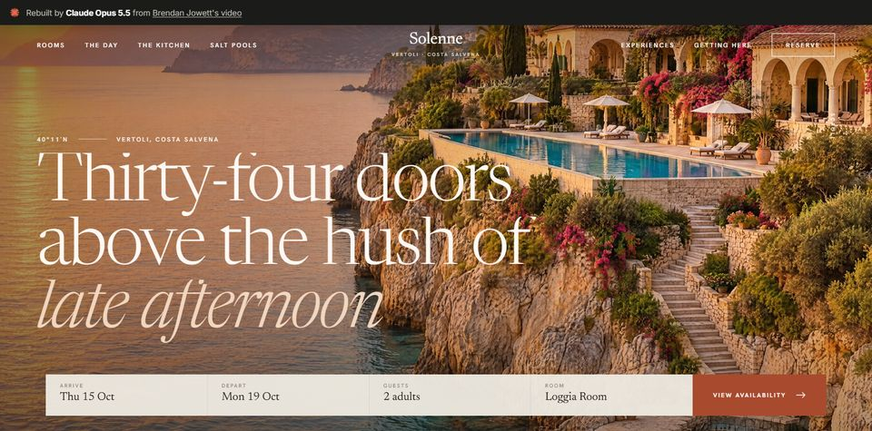
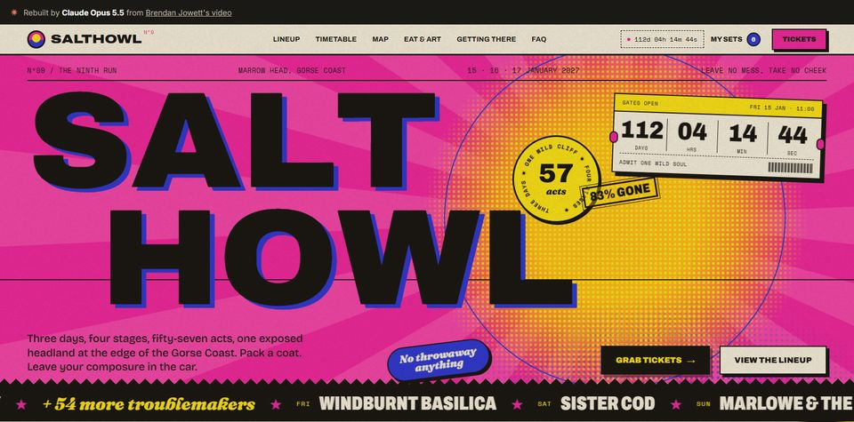
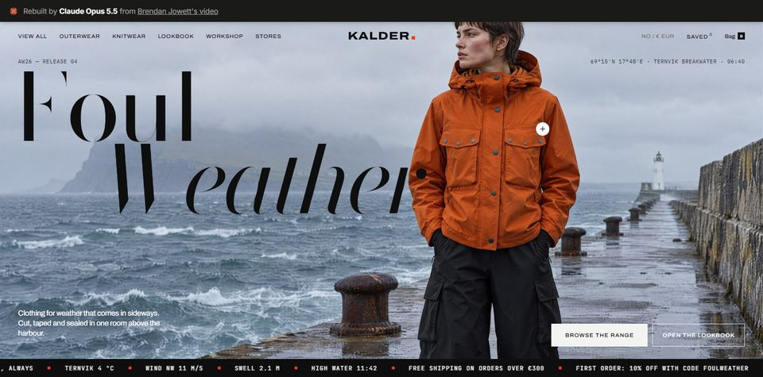
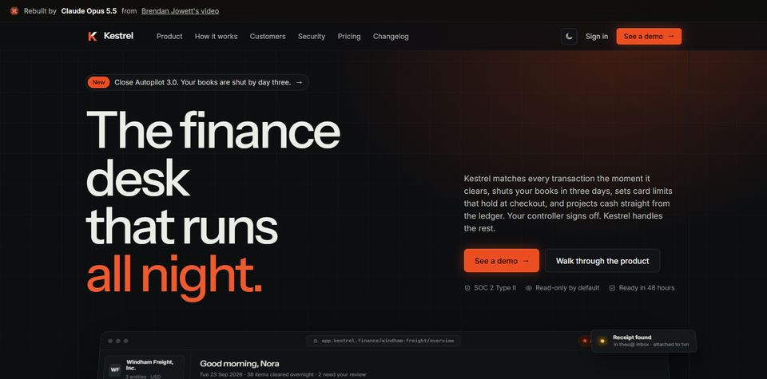
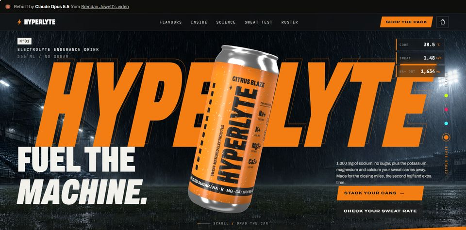
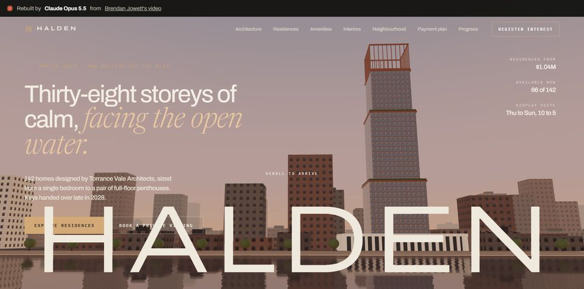
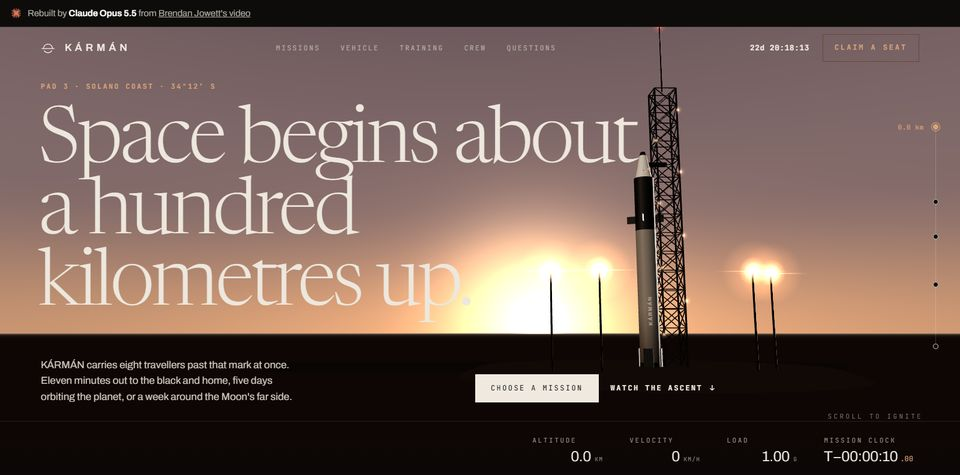

Video to Website: Development Journey
Claude Opus 5.5 rebuilt the seven websites that Brendan Jowett shows in his YouTube video. It did not have the sites' code. It had only a screen recording. This page tells, step by step, how that was done, and it includes every failure that the records show.
0. How this page was made, and the seven results
The sites
Each picture below is a screenshot of the live rebuild. Click a picture to open the live page. The 3D sites (5, 6 and 7) need WebGL. A desktop browser gives the full effect.

1 · Solenne — cliffside hotel
2 · SALTHOWL — music festival
3 · KALDER — clothing brand
4 · Kestrel — finance software
5 · HYPERLYTE — sports drink, 3D can
6 · HALDEN — residential tower, 3D
7 · KÁRMÁN — space tourism, 3DWhat is reconstructed, and from what evidence
This page is a reconstruction. The work happened in four Claude Code sessions. The session that wrote this page started after a /clear, so it had no memory of the earlier work. Everything below comes from the saved records listed here, not from memory.
| Session | Local time (local offset) | What it did | Record used |
|---|---|---|---|
S1 4c61f10e | Thu 24 Sep 14:57 → 21:59 | Download, frames, 7 build agents, checks, site 5 hang, evidence report, copyright talk, Higgsfield install | Main transcript (10.3 MB) and 8 agent transcripts (18–94 MB each) |
S2 6178a7a4 | Thu 24 Sep 22:08 → Fri 25 Sep ~03:03 | Replaced all 75 photos with Higgsfield images | Main transcript (13.1 MB) and 7 agent transcripts |
S3 39aca3b5 | Fri 25 Sep 03:06 → 04:54 | New banners, copy rewrite, evidence page, public GitHub repository | Main transcript (3.9 MB) and 7 agent transcripts |
S4 2c18db54 | Fri 25 Sep 07:13 → open | GitHub Pages, README, this page | Live notes of this session |
The transcripts are JSONL files, one event per line. A small Python script (dump.py) turned them into plain text. That condensed text cuts long tool inputs after about 400 to 500 characters. So some commands, some file contents, and the end of two agent reports (site 3 and site5-finish) are missing. Where a detail is missing, this page says so. Other evidence: HANDOFF.md, TASKS.md, BRIEF.md, README.md, the scripts in scripts/ and scratch/higgs/, the job JSON files from Higgsfield, and the git history.
Some facts were measured again during the reconstruction, for example the aspect check on all 70 generated images. Those facts say "recomputed". All times on this page are the owner's local time, local offset, unless a line says UTC. The transcripts store UTC.
The whole pipeline on one screen
- Download.
yt-dlpfetched the video-only stream at 1440p (format 308), 600,540,458 bytes. - Cut into stills.
ffmpegsaved 2 pictures per second: 1,826 JPEG frames of 2560×1440 for the 7 site segments. - Index the stills. A script made 49 contact sheets, 20 labelled frames per sheet, so an agent can find a section before it opens full frames.
- Build. Seven Claude agents, one per site, read the sheets, about 22 to 46 full frames each, the narration, and short high-frame-rate clips. Each wrote one HTML file with inline CSS and JavaScript.
- Check. Each agent took screenshots in real Chrome at the same scale as the frames and compared them with the frames. The main thread did the same check again and sent fixes back.
- Photos, phase 1. The agents cut the photos out of the video frames (75 files).
- Photos, phase 2. All 75 were replaced with new images from text prompts: GPT Image 2.5 through the Higgsfield command-line tool, with a measured quality gate.
- Text. Seven more agents rewrote every visible string in new words. The seven brand names stayed.
- Publish. A public GitHub repository, then GitHub Pages for the live sites.
1. The brief and the prompts
the owner typed every message below. The text is verbatim, with his spelling. "brock" in the last prompt means Brendan Jowett, the creator of the video. Messages that the owner pasted from elsewhere are marked "paste". Other "user" events in the transcripts are tool results, agent notifications, or skill texts, and they are not listed.
Session 1 (24 Sep, build)
| Local | the owner's message |
|---|---|
| 14:57 | "will you be able to "watch" the video https://www.youtube.com/watch?v=mPiaap4zEVk&t=21s end-to-end and recreate the seven websites showcased in the video. you will need get the detailed visual for each website to recreate each of them. please confirm one way or another. do not act yet" |
| 15:08 | "can you do without yt-dlp as it costs $$$ right ?" |
| 15:15 | "can you remind me 1. what is " analyze_long.py pipeline calls the Gemini API," for ? 2. after that, remind me recommendation: use yt-dlp + ffmpeg and skip Gemini." |
| 15:26 | "please go with your recommendation. recreate each of the 7 websites with highest fidelity as the original and capture the animations in each of them. go !" |
| ~16:45 | "you don't need to ask me about rm in the scratch folder from here on" (quoted by the site 6 agent; the exact minute is not in the condensed log) |
| 17:12 | "please give an update of the agents' status" |
| 18:30 | "what happened to site5 ? is it still running ?" |
| 18:40 | "please stop the agent. start a new one to test and finish index.html." |
| 19:54 | "give an update of site5-finish status" |
| 19:56 | (paste of Claude's two questions) then: "On 1. should we keep those working files as evidence or receipt of work ? 2. which images should i check to make the decision" |
| 20:04 | "1. Keep the working files as evidence? agree with your recommendations + DO NOT KEEP video/source.webm (573 MB) 2. what we have are good enough. Please remove as you suggested in 1. you don't need my permission for this one task" |
| 20:10 | "how can we know that you re-create these websites from scratch and not modifying the frames from the videos ? what evidence can we provide to skeptics" |
| 20:13 | "yes, produce the evidence report for each site" |
| 20:34 | "crop out the webcam and publish it publicly <-- can we crop the presenter's face in the "Video frame." and publish evidence/index.html public ? do we still violate some copyright rule or other rules" |
| 20:54 | "OK even with 1-5 above, any problem publishing the 7 sites in Github" |
| 21:42 | "i have higgsfield subscription. you can use higgs to replace the 75 photos. the quality must be as good as or exceeding the original. how can that be guaranteed" |
| 21:49 | (paste) "Set up Higgsfield for me so I can generate images and videos from here. 1. Install the CLI: run npm i -g @higgsfield/cli. 2. Authenticate: run higgsfield auth login ... 3. Install the companion skills: run npx skills add higgsfield-ai/skills." |
| 21:55 | "add C:\Users\USERNAME\AppData\Roaming\npm to user PATH." |
| 21:58 | /handoff-after-clear |
Session 2 (24–25 Sep, images)
| Local | the owner's message |
|---|---|
| 22:08 | /clear, then /exit |
| 22:09 | @HANDOFF.md (the whole instruction; the handoff's "Next task" was the image pilot) |
| 22:20 | "approved, use 4K rule, re-aim the hotspots" |
| 02:53 | "re-encode to 2560 px at q82" |
| 03:01 | /handoff-after-clear |
Session 3 (25 Sep, text, banners, repository)
| Local | the owner's message |
|---|---|
| 03:06 | /clear, then @HANDOFF.md |
| 03:15 | "My review : None rejected Do both Public GitHub repo and Evidence page tasks. ask me if questions" |
| 03:18 | Answers to 4 multiple-choice questions (see section 6): banner "Relabel, no stats"; copy "Text, keep names (Recommended)"; webcam "Blur the box"; repository "opus55-website-rebuilds (Recommended)". |
Session 4 (25 Sep, Pages and this page)
| Local | the owner's message |
|---|---|
| 07:13 | "please confirm that we are ready to push to the codebase to github." |
| 07:35 | "please 1. make all 7 sites github pages and make them renderable as live web page in README.md 2. the ultimate goal of this project is to demystify the "video-to-website" generation process. Opus 5.5 "watched" brock's video and subsequently created the websites. i want this process to be reveal. please capture step-by-step how the websites were created using /dev-journey skill, warts and all. include how animations were recreated from static frames, how and why new images were created to avoid rule violations. explain the higgsfield process - was cli or mcp used ? how ? which image model was used ? how each image was recreated but modified ... include also what website features were NOT replicated and why. surface unknown unknowns to this human who is not familiar with this process and address all those unknown issues in the dev journey html also. ask me if any question." |
| (answer) | To the question "should the public journey show video material?" the owner chose "No stills (Recommended)". So this page shows no video frame and no old photo crop. It links to YouTube timestamps. |
How the brief was interpreted
The first message asked two things: can Claude "watch" the video, and can it recreate the sites. It also said "do not act yet". Claude answered with a plan and its limits and did nothing else. The main sentence was: "I cannot play a video stream directly. I can turn the video into still frames, and I can look at those frames as images." It listed what frames do not give: parts the presenter does not show, motion timing and easing, exact fonts and colours, clean photos and 3D, and text smaller than about 12 px.
"Highest fidelity" was read as: every section the video shows is present, every animation the presenter names is built, and a screenshot of each rebuild matches a frame from the video. Claude wrote this finish line into TASKS.md. "Capture the animations" was read as: build the named effects so that they work, with timing matched by eye. It was not read as frame-exact timing, because Claude had already said that frames cannot measure timing.
Some rules were active in every session and shaped the output. the owner's global instructions require Simplified Technical English, dark-mode HTML, "questions are read-only" (a question gets an answer, not an action), "never kill a process by name", and "finish, or say what you left". That is why Claude often answered a question and then wrote "You asked a question, so I have not changed anything." The build brief for the 7 agents is BRIEF.md. It is public, and it still describes phase 1 (text copied verbatim, photos cropped from frames). Both were replaced later.
Human-in-the-loop moments
the owner acted at these points. Each one is invisible in the finished sites.
- Choice of method: free
yt-dlp+ffmpeg, no paid Gemini call. - Approval of deletes in
scratch/, and one permission prompt that he answered by hand. - The decision to stop the hung site 5 agent and start
site5-finish. - The decision to delete about 1.5 GB of working files, including the video.
- The question about skeptics, which produced the evidence report.
- The questions about copyright, which led to the image and text replacement.
- The Higgsfield subscription, the pasted setup steps, and the PATH request.
- The pilot approval with two rule changes ("use 4K rule, re-aim the hotspots").
- The size choice for images ("2560 px at q82").
- A review of all 7 contact sheets of new images (about 8 min 40 s, none rejected).
- Four answers on banner, copy scope, webcam, and repository name.
- The choice that this page shows no video stills.
2. How an AI "watches" a video
What the model can and cannot see
Claude Opus 5.5 does not receive a video stream. It receives text and still images. So "watching" here means three inputs: a set of still frames, the spoken words as text, and short bursts of frames taken closer together. The model reads each frame as one picture. It sees layout, colours, readable text and photos. It does not see what happens between two frames, and it does not hear sound.
The presenter's words filled several of these gaps. The file transcript.txt (28,399 bytes) was already in the project folder when session 1 started. Its origin is not recorded. It holds the narration with timestamps, for example "1:14 ... if I refresh the page, you will see the animations of loading the web page. And you'll see this entire image is also slowly zooming in." That sentence told the hotel agent that a load animation and a slow zoom exist, which a still frame cannot prove.
Step 1: download (yt-dlp, format 308)
the owner asked if yt-dlp costs money. It does not. It is a free open-source downloader with no account or key. Claude listed the formats with yt-dlp -F and chose format 308, a video-only stream at 2560×1440 (1440p). Format 308 has no audio. The narration was already in transcript.txt.
yt-dlp -f 308 -o "video/source.%(ext)s" "https://www.youtube.com/watch?v=mPiaap4zEVk"Result: video/source.webm, 600,540,458 bytes (573 MB). the owner later asked to delete it, and it was deleted at 20:04 on 24 Sep.
Step 2: frames (ffmpeg from imageio_ffmpeg, 2 per second)
ffmpeg was not on the PATH. Claude did not install it. It found the copy that ships inside the Python package imageio_ffmpeg:
C:\Users\USERNAME\AppData\Local\Programs\Python\Python313\Lib\site-packages\imageio_ffmpeg\binaries\ffmpeg-win-x86_64-v7.1.exeIt cut one segment per site, with the start and end taken from the chapter times in the transcript, and saved 2 frames per second:
"$FF" -loglevel error -ss <start> -to <end> -i video/source.webm -vf fps=2 -q:v 2 -start_number 0 frames/<site>/f_%04d.jpgFrame f_NNNN shows the video at segment start + N/2 seconds. The frame counts were: hotel 272, festival 324, e-commerce 190, SaaS 250, drink 336, high-rise 268, space 186. The total is 1,826 frames at 2560×1440.
The brief told the agents the frame geometry. The browser page fills about x 0–2545, y 87–1354 of each frame. The presenter's webcam covers the bottom-left corner, about x 0–545, y 1045–1440, in many frames.
Step 3: contact sheets
scripts/sheets.py made contact sheets: a 5×4 grid of every second frame (so 1 frame per second), each labelled with its file name. There were 49 sheets (hotel 7, festival 9, e-commerce 5, SaaS 7, drink 9, high-rise 7, space 5), each 2560×1152. The brief said: "READ THE SHEETS FIRST to map sections to frame ranges. Then read full frames only where you need copy text, layout detail, or colors (about 20–40 full frames). Do not read every frame."
Why Gemini was skipped
the owner's own pipeline has a script, analyze_long.py, that sends a YouTube URL to Google's Gemini model. Gemini can process sound and picture together and return a chaptered summary with timestamps. Claude first offered it as an optional step to find where each site appears. It then recommended skipping it for two reasons: the Gemini API charges per token, and the frames plus the transcript's chapter times could do the same job. the owner agreed: "please go with your recommendation".
The token cost of looking at frames
Every image that the model reads uses part of its context window and part of the owner's plan. Claude said this before the start: "1 frame each second of a 15-minute video is 900 images". That is why the agents read sheets first and only 22 to 46 full frames each. The records hold no per-frame token figure, so this page gives none. The effects are visible: a "Coach" hook warned at about 156k context tokens in session 1, then at about 181k, 197k (twice), 221k and 223k. At about 225k Claude itself advised a fresh session for the image work. The site 5 agent stopped responding after about 70 large images were in its context (9 sheets, 46 full frames, 16 or more screenshots). Section 10 has the details.
3. A team of 7 agents
The setup
Before the agents started, the main thread made the shared inputs and tools: the frames, the sheets, scripts/shot.py (a screenshot tool), TASKS.md (the checklist), and BRIEF.md (the brief). shot.py opens a page in the installed Chrome through Python Playwright at 1600×792 CSS pixels with scale 1.6. The output is 2560 pixels wide, the same scale as the frames. It prints the page height and every JavaScript error.
At 15:36 the main thread started 7 background agents in one message, one per site, type general-purpose. Each got the same instruction, "Read and follow ... BRIEF.md exactly", plus its site, its segment start second, its chapter, and the features that the presenter names. Example for site 7: "One long scroll-driven three.js journey: rocket on the launchpad ..." and "Everything 3D is procedural (no downloaded models or textures; generate planet textures with canvas/noise)."
The brief set the rules. Output is one self-contained index.html per site with inline CSS and JavaScript. Allowed outside files: Google Fonts, and scripts from cdnjs or jsDelivr (for example three.js, GSAP, Lenis). No downloaded 3D models, because the original build had the same rule. Colours must be sampled from frame pixels. Copy must be "verbatim wherever readable". Interactive features must work. The page must have zero JavaScript errors. The report back must list what differs from the original and why.
How the main thread checked each site
When an agent reported, the main thread did not trust the report alone. It took its own screenshot with shot.py, then ran scripts/cmp.py. That script crops the browser area from a video frame, puts it on top, and puts the rebuild screenshot below, both at 1280 pixels wide. The main thread then looked at the pair and wrote what matched and what did not.
| Site | Report (local) | Frame compared | Result |
|---|---|---|---|
| 3 KALDER | 16:10 | hero vs f_0008 | Close match; webcam corner differs |
| 1 Solenne | 16:16 | hero vs f_0030 | Match; hero photo softer (enlarged about 2.2×) |
| 2 SALTHOWL | 16:34 | hero vs f_0036 | Match; the countdown differs because it is live |
| 4 Kestrel | 16:34 | hero and dashboard vs f_0028 | Match; dashboard numbers differ because they change live |
| 6 HALDEN | 16:39 | hero vs f_0008 | Sent back with 4 fixes, then re-checked |
| 7 KÁRMÁN | 16:56 | hero vs f_0002 | Sent back with a rocket fix, then re-checked |
| 5 HYPERLYTE | 19:41 | hero vs f_0010, flavours vs f_0110 | First agent hung; site5-finish completed it |
Fixes sent back
Site 6, four hero fixes. The comparison showed four differences. The main thread sent them: "1. Camera framing ... Move the camera to match f_0008: lower, closer, and the tower slightly right of centre. 2. Foreground. The original has water in the bottom third ... Yours shows a ground plane and a row of small brick blocks ... 3. City ... Thin them out, and add 3–4 taller neighbours like the frame. 4. Tower texture ... Yours reads as a coarse blue/red checker. Make the grid finer and less saturated." The agent fixed all four in about 6 minutes. The tower now spans y ≈ 75–445 of 633 pixels (original ≈ 100–500). The ground became a reflecting water shader. About half of the city blocks went, and 5 taller neighbours came in. The facade got 12, 10 and 9 bays per face in place of 8, 7 and 6. Two differences stayed: the reflection is sharper and more rippled than the original's soft blur, and the scene is a little more pink.
Site 7, the rocket. "The rocket is backlit in the original: dark grey body, a bright rim on its right edge, a thin capsule/nose section, and it stands close against the tower's left side ... Yours is bright white with black bands and stands apart from the tower." The agent darkened the body, added a rim light that fades out by timeline value t=1.2, added a white vertical "KÁRMÁN" wordmark, moved the tower from x=3.4 to 2.2, and warmed the pad lights (#ffd6a0 flare, #ffc890 glow). The rim light turned the ground grey, so the agent made the ground, pad and slab unlit. After the fix, the rocket was still a little further left than in the video, and the rim was weaker.
The agents' own screenshot rounds had not caught these problems. The main thread's side-by-side check found them.
The site 5 hang
The site 5 agent started at 15:36. Its last file write was at 16:13. At 17:12 the owner asked for status. The main thread found no new files for about an hour and sent the agent a status request. No reply came. At 18:30 the gap was 2 hours 17 minutes. The page itself existed: 95 KB, 23,544 px tall, 14 sections, no JavaScript errors, and its hero matched frame f_0010.
Claude listed three possible causes: a permission prompt waiting on the owner's screen, a hung command, or a stalled agent. It did not act, because the owner had asked a question. At 18:40 the owner said: "please stop the agent. start a new one to test and finish index.html." Claude stopped it with TaskStop, by its own task id, not by a name match. Then it started site5-finish with new rules. Keep the existing file. Test the 8 narrated features in Chrome. Put timeout 180 on every browser command, and wait no more than 3 minutes on anything. Delete only inside scratch/5-drink/, with Python.
The finish agent ran for about 62 minutes. It found all 8 features working and one defect: the footer word "HYPERLYTE" was 1,898 px wide in a 1,600 px window, so its last letter was cut. It added a function fitBig() that sizes the word to 90% of the window width. It also tried to rebuild the hero stadium photo from about 40 frames and failed (section 4).
The reconstruction found the likely point of the hang. The last logged call of the first agent was a Read of a small 660×410 PNG (f176_br.png). No result followed. No command was running. So the stall was probably in the harness, at an image result, in a context that held about 70 large images. This is an inference. The log does not prove it.
4. The crux: animation from still frames
Why a still frame cannot show timing
A frame is one instant. At 2 frames per second, 0.5 seconds pass between two frames. Many web animations are shorter than that. A button fade of 300 ms can start and end between two frames, so no frame shows it. Easing is the shape of the speed over time: fast at the start and slow at the end, or the opposite. To see that shape you need many samples inside the animation. Two samples show only a "before" and an "after".
There is a second problem. The presenter scrolls and moves the mouse by hand. So a change between two frames can come from the animation, from the scroll, or from both. The agent must separate the two.
The important exception: scroll-linked effects
Most effects on these sites do not run on a clock. They follow the scroll position: a word darkens as you scroll past it, a camera moves as you scroll, a section pins in place and slides sideways. For such an effect, time does not matter. What matters is "at scroll position Y, the page looks like this". A frame records one scroll position and one state. If the agent can find the scroll position of each frame, the frames become a table of states. That is why the 3D scroll journeys could be rebuilt with close camera paths, while time-based effects (a loader, a hover, a modal opening) needed other evidence.
Six ways the agents filled the gap
- The narration. The presenter names effects that stills cannot prove: "this entire image is also slowly zooming in", "this pop-up comes up. It sort of fades itself in", "the entire website ... has this moving grain effect". Every site task listed these narrated effects.
- High-frame-rate windows. The agents cut short clips from the video at 4 to 10 frames per second around one effect, then pasted the frames into one grid image to read as a strip. The table below lists every window.
- Neighbouring frames. Agents read odd frames next to even ones (for example 203 between 202 and 204), or 2×2 grids of successive frames, to see the state between the 1-per-second contact sheets.
- Pixel measurement. Some agents measured motion with code, not by eye: edge tracking, template matching, and minimum pixel difference. This gave scroll offsets and a parallax ratio.
- Known web patterns. A grey-to-black change that follows scroll is almost always a "scroll-scrubbed reveal". A section that stays fixed while its content slides is a "pinned" section. The agents built these standard patterns and then tuned them.
- Tuning by comparison. The agents set durations and easing curves themselves, then took screenshots and compared them with frames, and changed numbers. The logs show no easing curve or duration that was measured from frames.
Every high-frame-rate window
All windows used the same ffmpeg binary on video/source.webm, for example "$FF" -loglevel error -ss 81.5 -t 4.5 -i video/source.webm -vf "fps=6,scale=640:-1" scratch/1-hotel/m_%03d.jpg. Times are seconds into the video.
| Site | Window (video seconds) | fps | What it was for |
|---|---|---|---|
| 1 hotel | 81.5–86.0 | 6 | Page loader (27 frames in one sheet) |
| 1 hotel | 131–162 | 10 | "A Day at Solenne" photo motion, 310 frames, the longest window |
| 2 festival | 342.0–344.5 | 8 | The "moving line" at the bottom (Getting There) |
| 2 festival | 238.0–239.5 | 8 | Pinned image section (the report says 10 fps; the logged command says 8) |
| 3 e-commerce | 358–361.5, then 358.6–360.2 | 8, 10 | Page load, first wide, then narrowed to the 1.6 s where the change happens |
| 3 e-commerce | 395.5–398.5 | 10 | Product window "opens itself up" |
| 3 e-commerce | 403.5–406.5 | 4 | Jump from lookbook to stores |
| 4 SaaS | 480.5–483.5 | 4 | Live hero dashboard |
| 5 drink | none | — | Only 2 fps frames and odd neighbours were used |
| 6 high-rise | 853.6–856.0, plus single frames at 854.3, 854.5, 854.7 | 5 | Construction progress diagram |
| 6 high-rise | 828.6–830.2 | 10 | Amenities photo swap |
| 6 high-rise | 844.0–845.2 | 5 | Promenade image |
| 7 space | 899–905, 914–920, 947–959 | 4, 4, 2 | Launch, ascent, camera orbit round the rocket |
Site by site: concrete examples
1 · Solenne (hotel)
The hotel agent measured the "A Day at Solenne" section with code. A script, edge.py, compared one column of a photo against the background column in each 10 fps frame, to find the photo's top and bottom edge. Output: 010 [(453, 1315)] 011 [(397, 1259)] 012 [(378, 1240)] 013 [(303, 1165)] 014 [(191, 1053)]. The photo keeps its 862 px height and moves up 56, 19, 75 and 112 px per 0.1 s. Frames 019 to 022 stay at (274, 808), a hold. Then a new image enters from below. So the photos form a scrolling stack with holds. The agent built this as a pinned section with parallax.
The loader came from the 6 fps window: letters rise one by one, a rule grows, and the loader wipes up in about 2.2 s. The day clock was built from the times in the frames (06:10, 08:30, 11:00, 14:30, 18:45, 20:30, 23:50). The sky colour was sampled per time: dawn #e2d5cf, golden #dfb487, dusk #48364e, midnight #0f1626. The word-by-word story reveal was tuned after a screenshot: the progress formula changed from (vh()*.644-r.top)/(vh()*.56) to (vh()*.72-r.top)/(vh()*.5). No animation library: plain JavaScript and CSS transforms. The agent wrote: "Pop-up image change: I did not check its exact animation style at high frame rate."
2 · SALTHOWL (festival)
The agent identified the narrated "moving line animation at the bottom" from frames. Its note: "Moving line narrated = Getting There route line w/ bus icon progressing on scroll (pink solid behind bus, dotted ahead)." So it is scroll-driven, not a loop. The image section was read as a pinned sideways scroll whose background changes per card. The agent sampled peach #e8bea5, mint #99cdcf and gold #e7b559, and blended between them with a linear colour mix. The film grain became a full-page canvas redrawn every 70 ms; its strength was cut from .10 to .055 after a comparison. The hero sunburst is a CSS conic gradient that turns once in 120 s. The mouse effect (letters pulled toward the cursor) comes from the narration: "a lot of the elements of text is actually very well responding to my mouse moving around". A still cannot show it. No library.
3 · KALDER (clothing)
This agent measured a parallax ratio. It used OpenCV template matching (cv2.matchTemplate, TM_CCOEFF_NORMED) on a bollard in the hero photo. Between frames f_0008 and f_0030 the patch moved dy -272 (score 0.998). A mountain patch gave the same result (score 0.9987). From this the agent found that the photo moves 0.817 of the page scroll, and built the hero parallax at 1 − 0.817 ≈ 0.18.
The load animation came from two windows. The 10 fps strip showed the photo wiping down while it scales from 1.12 to 1, then "Low" rising, then "Pressure". The "opens itself up" product window came from a 10 fps strip: a thin line grows at the click point, and the panel opens from it. This site is the only one of the first four that used GSAP and ScrollTrigger (for the pinned lookbook). Tuning examples: the load timeline delay:.25 became delay:.35,paused:true and now starts only after the images load; counter duration 2.2 s became 1.5 s. One counter, "0€", counts down from 25, because one mid-count frame (f_0037) showed that.
4 · Kestrel (finance software)
The hero dashboard is code, not a picture, as the presenter says. The agent read the dashboard at full size by cropping frame regions, then rebuilt it in HTML, CSS and SVG. Its motion came from a 4 fps strip and from sheets of successive 2 fps frames. New rows appear and change from "Queued" to "Matching" to "Matched", the cash figure ticks up, and an agent log types itself. On scroll, the dashboard tilts in 3D and goes flat (CSS perspective:1800px). The ROI calculator was built so its results match four frames exactly (f_0118, f_0120, f_0126, f_0128), for example $422,841 saved and 8 days payback. The step section's scroll formula was tuned from (vh*.72-r.top)/(r.height*.62) to (vh*.5-r.top)/(r.height*.7). A pop-up uses an overshoot curve, cubic-bezier(.2,1.4,.4,1), chosen by the agent. No library.
5 · HYPERLYTE (sports drink, 3D)
The can is procedural: three.js r128 geometry built in code, with the label painted on a canvas as a texture. The code waits for the web fonts before it paints the label, so the label uses the Archivo font and not a fallback. The can's path through the page is a keyframe table. Each key holds a scroll position and the can's screen x and y, its height on screen in pixels, and three rotations. Example after a fix: the flavours section holds the can at y:84,h:590 with one full turn (ry:Math.PI*2) and a −3 degree tilt. Between keys, the code uses a smoothstep curve. The keys are rebuilt from the live section positions on resize and 1.5 s after load.
This agent used no high-fps window. It read odd frames (203, 303, 307) next to even ones to see the fall, the spin and the splash. The first renders looked washed out, so it switched off ACES tone mapping (NoToneMapping) and cut envMapIntensity from .9 to .55. The splash is 320 particles over a background photo. The presenter said the original's liquid "doesn't look super realistic".
The finish agent tried a known method to recover the hero photo behind the text. It took 40 hero frames and masked the text and the can in each. Then it kept the median of the uncovered pixels. It failed. 61% of the pixels (then 65% with a looser mask) were covered in every frame, and the colour mask also removed the sky. Its verdict: "The median composite is worse than the existing plate ... I keep the existing plate."
6 · HALDEN (residential tower, 3D)
The tower is procedural three.js r158. Its facade is a canvas texture of glass bays with bronze mullions. Its mass is three stacked blocks by level range with two setbacks: {from: 4, to: 13, s: 12 ...}, {from: 14, to: 27, s: 10.6 ...}, {from: 28, to: 36, s: 9.4 ...}, plus a crown with a pool. The city uses a seeded random generator, so it looks the same on every load. The sky is rendered into an environment map per time of day, so reflections change from golden hour to dusk.
Scroll drives 5 chapters with anchors at [0, 778, 1966, 3154, 4342, 5069] CSS pixels. At anchor 0 the camera is at [-31, 6, 95]; at 4342 it is at [-18, 8, 73]. A clock runs 17:30 to 19:36 with the scroll. In the dusk chapter the windows light floor by floor: litTo = lerp(24, 38.6, clamp(s.dusk * 1.6, 0, 1)). The agent put debug hooks on the page (window.__cam, window.__proj) so a test script could read the camera and aim a real mouse hover at level 32 of the 3D tower. It found scroll offsets by pixel difference: between frames 178 and 186 the page moved 204 display pixels. The site task noted that the presenter calls the original tower render weak, and it said: "copy what you see, do not improve the concept."
7 · KÁRMÁN (space tourism, 3D)
One fixed three.js r160 canvas sits behind the whole page. Each section carries a scene time t, from 0 (launch pad) to about 9.8 (Moon). Opaque sections hold t still. A helper, track([[t, value], ...]), interpolates the camera position and look direction between keyframes with smoothstep. The agent wrote tshot.py to render the scene at chosen t values without scrolling. It wrote off.py to measure scroll between frame pairs (for example frames 92 to 96: shift −150 px at error 0.40; a match at error 44.88 was rejected).
The Earth is a shader: noise-based continents, clouds, city lights on the night side, and a thin atmosphere rim. Most tuning changed shader constants, not geometry. Example: the atmosphere term exp(-d*d*14.)*1.2+exp(-d*1.6)*.25 became exp(-d*d*70.)*1.1+exp(-d*3.)*.14 for a thinner rim. The altitude, velocity, load and mission-clock display takes its key values from numbers read in the frames. To keep the page fast, the canvas skips frames when opaque sections cover the screen.
What all seven have in common
- A colour or opacity change that follows scroll was built as a scroll-scrubbed reveal with a progress formula of the form
(viewport*a - top)/(height*b), andaandbwere tuned by screenshot. - Only site 3 used GSAP with ScrollTrigger. The others used plain JavaScript,
position:sticky, CSS transforms, canvas and SVG. No site used Lenis. - All 3D is built in code: canvas textures for the can label, the tower facade and the rocket body; noise shaders for the Earth and Moon. No 3D model file was downloaded.
- Durations and easing curves are the agents' choices. They look close when you compare by eye. They are not measured copies.
5. The images: from video crops to Higgsfield
Phase 1: photos cut from the video
The brief told the agents to cut each photo from the clearest frame with Python PIL, and not to call any paid image API. Claude told the owner this was a cost choice: "Generated replacement images ... would look sharper, but they cost money." The agents cut 75 photo files. Where text, a cursor or the webcam covered a photo, they repaired it:
- Site 1 copied a shifted patch over labels (a "clone stamp"), or pasted the same area from a frame where the label was absent.
- Site 3 used OpenCV inpainting (
cv2.INPAINT_TELEA), which fills a masked area from the pixels around it. For the hero's webcam corner it tried to take real pixels from later frames (the rows never all appeared), then used a mirrored copy of the sea beside it. - Site 4 joined two frames at a measured offset of 553 px to get a full customer photo. It also enlarged three 63-pixel thumbnails to 600×723, which made them soft (sharpness score 2 for Marcus).
- Sites 5, 6 and 7 mirrored and blended the neighbouring area over the webcam, or cut the webcam column away. Site 6 had no clear frame of the wine room, so it used a tinted, mirrored copy of the club photo.
Why they had to go
At 20:10 the owner asked how a skeptic could know the sites were rebuilt and not copied. Claude's first sentence was: "Part of what a skeptic suspects is true. The photos are cut from the video frames." Then the owner asked about publishing, first the evidence page and then the sites on GitHub. Claude ranked the risks. It stated: "This is a practical assessment, not legal advice." This page repeats that caveat.
| # | Problem | Why (Claude's reasoning at the time) | Risk given | What was done |
|---|---|---|---|---|
| 1 | 75 photo files cut from the video | "full-size copies of the creator's material, not small screenshots used for comparison. A fair-use argument is weak here." A takedown notice can disable a GitHub repository. | High | All 75 replaced with generated images (this section) |
| 2 | Copy text taken word for word | "Text is easier to protect by copyright than layout." Whether AI-written text has copyright is not settled. | Medium | All copy rewritten (section 6) |
| 3 | The build banner | It shows the original's time and cost. Readers would think the numbers describe the rebuild. | Medium (misleading claim) | Stats removed (section 6) |
| 4 | Brand names and designs | Fictional names, so no trademark owner. Layout and style are hard to protect. | Low | Creator credited in README and banner |
| 5 | The yt-dlp download | YouTube's terms forbid downloading with such a tool. A contract matter, not copyright. The file was already deleted. | Very low | Video not in the repository |
| — | The presenter's face (webcam) | A real person who did not agree to appear on the page | Privacy | Blurred on the private evidence page; no frames on this public page |
There is one more fact. In the video, at 1:44, the presenter says: "I did prompt it to use the GPT image 2.5 model". So the original photos were themselves AI images. Claude noted that "Whether AI-generated images are protected by copyright is not settled law", and treated them as the creator's material anyway.
Could quality be "guaranteed"?
the owner asked for new images "as good as or exceeding the original" and asked how that can be guaranteed. Claude's answer: "No method can guarantee image quality in advance. Image models give a different result on each run." It proposed a gate that each image must pass, plus the owner's final review. It also set the copyright rule for the new images: generate from written descriptions, and never give an old crop to the model as the starting image, because "If I start from the crops, the new images copy the creator's images, and the copyright problem stays."
Higgsfield: CLI or MCP?
The command-line tool (CLI) was used for every image. No MCP tool was called.
Two Higgsfield connections were visible in the session. The Higgsfield image MCP server needed a sign-in and was not connected. The other active one, higgsfield-bridge, controls Adobe and Blender, not image generation. Claude told the owner this. the owner then pasted Higgsfield's own setup text, which installs the CLI. The installed skill higgsfield-generate says of itself: "Submit jobs to any Higgsfield model. Wraps the higgsfield CLI." Session 2 followed that skill and a memory note that said the CLI was installed and signed in. No session argued CLI against MCP. The choice followed from the pasted setup, the skill and the memory note.
The setup, 24 Sep, 21:49 to 21:56:
npm i -g @higgsfield/cliinstalled version 1.1.26. The next command failed:/usr/bin/bash: line 3: higgsfield: command not found.- Claude found the binary in
C:\Users\USERNAME\AppData\Roaming\npmand ran it by full path.higgsfield auth tokenshowed a saved sign-in, so no browser login was needed.higgsfield account status --jsongave{'credits': 673.91, 'subscription_plan_type': 'plus'}(the email field was filtered out). npx skills add higgsfield-ai/skills -g -a claude-code -s '*' -y --copyinstalled 8 skills. Claude warned: "these skills run with full agent permissions. I have not reviewed their contents."- the owner asked to add the npm folder to his PATH. It was already there. Claude Code had started with an old copy of the PATH. From then on, every script began with
export PATH="$PATH:/c/Users/USERNAME/AppData/Roaming/npm".
The model and its settings
Model: GPT Image 2.5, id gpt_image_2_5 (found with higgsfield model get gpt_image_2_5 --json). Settings for all 82 charged generations: --quality high --resolution 4k. Aspect ratios came from the list auto,1:1,3:2,2:3,4:3,3:4,16:9,9:16,21:9,27:16,16:27,9:8,8:9,4:5,5:4. Claude checked the price first:
| Quality, resolution | Credits per image |
|---|---|
| medium, 2k | 1 |
| medium, 4k | 1.25 |
| high, 2k | 2.75 |
| high, 4k | 4.25 |
Claude chose high and 4k without a test at the cheaper settings. The pilot command, one image after another:
timeout 900 higgsfield generate create gpt_image_2_5 --prompt "$prompt" --aspect_ratio "$ar" \
--quality high --resolution 4k --wait --wait-timeout 14m --json > "$name.json" 2> "$name.err"For the full run Claude wrote scratch/higgs/gen.sh, used by all 7 agents as bash scratch/higgs/gen.sh <site> <name> <aspect> "<prompt>" [--image ref]. It does this, in order:
- Adds the npm folder to the PATH.
- Changes into
scratch/higgs/<site>/. (This step caused 3 path failures, listed below.) - Renames an older result to
<name>_vN, so every earlier try is kept. - Appends the name, aspect and prompt to
prompts.tsvbefore the call, so failed calls are logged too. - Runs
higgsfield generate create ...and waits. - Downloads the full PNG from the job's
result_url. (The first script tookmin_result_urlby mistake, a small WebP preview. Claude fixed that after it read the job JSON.)
Reference images: what was allowed
The CLI accepts --image with a file path or an upload id. The rule in the agents' brief was: "Generate from TEXT prompts that describe the scene. Never pass an old image ... as --image input. That is a copyright rule. You MAY pass one of OUR new generated PNGs ... for consistency (same garment, same building)." The references were used like this: "Use the reference for the garment design only, not the scene", "use the reference only for materials, palette and light, not its layout", "Use the reference only for the location and light, not for the person or clothes". For the SaaS portraits the rule was stricter: "Do NOT pass marcus.png as --image (it would copy his face); describe the style in text."
A note on people. The prompts described each person with the same age, gender, hair and clothing as the old image, so the set would still fit the page. The faces are new, because no old image went into the model. Crowds were composed from behind, backlit or as silhouettes, which also removed faces from the festival photos.
The quality gate
The gate script is scratch/higgs/sheet.py. Its final version has three checks per image:
- 4K: the long side is at least 3200 px.
- Sharper: the sharpness score of the new image, after it is shrunk to the old crop's width, is higher than the old crop's score. The score is the variance of the Laplacian, a standard measure of how strong the fine edges are:
cv2.Laplacian(grey, cv2.CV_64F).var(). - Aspect: the width-to-height ratio is within 10% of the old one.
Then each agent had to zoom in at full size and look for "faces, hands, fingers, text, logos, watermarks, melted objects, duplicated limbs", install the image, and take a before/after screenshot of the real page with onpage.py. The rule: "The after must be no worse: overlaid text still readable, hotspots still on their objects, subject not cut off." Each site also got a contact sheet, old image left and new image right, for the owner.
The gate changed once. The pilot version asked for "at least 2× the old size". That was impossible for three images whose old crops were already 2065 to 2545 px wide, because the model's widest output is 3840 px. Claude told the owner: "So 2× is not possible with this model, and the check cannot pass." the owner approved the "4K rule" at 22:20.
The pilot
Five hard images, one per site type, generated from 22:13 to 22:16:
| Image | Old px | New px | Sharpness old → new (at old size) |
|---|---|---|---|
| golden (hotel hero) | 1145×828 | 3312×2480 | 259 → 2817 |
| hero (KALDER), v1 | 2545×1133 | 3840×1648 | 44 → 469 |
| hero (KALDER), v2 final | 2545×1133 | 3840×1648 | 44 → 100 |
| capsule (space) | 2370×1415 | 3840×2160 | 59 → 843 |
| marcus (SaaS) | 600×723 | 2560×3200 | 2 → 352 |
| living (high-rise) | 2065×954 | 3840×1648 | 217 → 1366 |
The pilot showed four problems. The 2× rule could not pass. The new capsule is larger in the frame, so hotspots 01, 03 and 05 no longer sat on their parts. The KALDER model was smaller in the frame. The living-room furniture was arranged differently. the owner's answer: "approved, use 4K rule, re-aim the hotspots". Then the KALDER hero v1 failed on the page: "the model was small, her head sat under the coordinates text, and the parka hotspot landed next to the jacket." Claude generated v2 with the model "centred at 72 percent of the frame width", so the existing hotspots land on the parka and trousers.
The full run
At 22:33 Claude copied all 75 old files to scratch/old_img/<site>/ as a rollback, then started 7 agents, one per site. They ran for 28 to 137 minutes:
| Agent | Minutes | Images | Charged generations | Credits |
|---|---|---|---|---|
| 4 SaaS | 28 | 4 + 3 thumbnails | 5 | 21.25 |
| 7 space | 40 | 4 | 5 | 21.25 |
| 2 festival | 84 | 7 | 9 | 38.25 |
| 3 e-commerce | 85 | 14 + 1 derived | 14 | 59.5 |
| 5 drink | 101 | 9 | 11 | 46.75 |
| 6 high-rise | 107 | 12 | 13 | 55.25 |
| 1 hotel | 137 | 15 | 19 | 80.75 |
Of the 75 files, 70 are generated images and 5 are derived from them. t-pier is a crop of the new KALDER hero, and t_marcus, t_amara, t_priya and t_tomas are thumbnails of the new portraits. A final check compared all 75 files in sites/*/img/ with the old ones: unchanged: [].
Credits: an exact chain
90 calls went through gen.sh. 14 failed before a job existed and cost nothing. 76 were charged at 4.25 credits = 323.0. The pilot was 6 generations (5 plus hero v2) = 25.5. Total: 82 generations = 348.5 credits. The balance readings agree exactly: 673.91 at the start, 652.66 after the pilot, 648.41 after hero v2, 325.41 at the end. 673.91 − 325.41 = 348.5. Two agents first counted their own failed calls as charged. The hotel agent said 89.25 and then corrected itself: "the real charge is probably 19 x 4.25 = 80.75". The e-commerce agent said 68; the real charge was 59.5. Claude's final figure came from the balance, not from the agents.
Every Higgsfield failure, verbatim
| # | Image | Error text | Cause | Fix |
|---|---|---|---|---|
| 1 | festival gull-king | Error: Media "scratch/higgs/2-festival/gullref.png" is neither a UUID nor an existing file path. | gen.sh changes folder first, so a path from the project root points at nothing | Absolute path |
| 2 | space cabin | Error: Media "scratch/higgs/7-space/capsule.png" is neither a UUID nor an existing file path. | Same | Path relative to the site folder |
| 3 | drink classified | Error: Media "scratch/higgs/5-drink/pack.png" is neither a UUID nor an existing file path. | Same | cygpath -m absolute path |
| 4–5 | e-commerce p-parka (×2) | Error: request failed (no response received) | Reference hero.png, 7,578,104 bytes | 2048 px JPEG copy, 285,470 bytes |
| 6–7 | high-rise kitchen (×2) | same text | Reference living.png, about 11 MB | 2048×879 JPEG, uploaded once, id reused 7 times |
| 8–9 | space cabin (×2) | same text | Reference capsule.png, about 9 MB | 1920×1080 JPEG, uploaded |
| 10–11 | festival gull-sculpture (×2) | same text | Reference gull-king.png, 13,471,244 bytes | 1600×1280 JPEG, 642,213 bytes |
| 12–13 | hotel room-cliff (×2) | same text | Reference room-cliff_v1.png, 11,749,613 bytes | 2048 px JPEG, 863,522 bytes |
| 14 | drink classified | same text | Reference pack.png, 10,975,918 bytes | 1600 px JPEG |
Every failed call was checked against the job list with higgsfield generate list. None had created a job, so none was charged. The pattern "a PNG reference over about 7 MB fails" is an observation, not a proven limit: one 13,093,501-byte PNG did upload and work. All JPEG references of 0.29 to 1.23 MB worked. The 7 agents also sent jobs to one account at the same time, and nobody tested whether that contributed.
A second size problem cost credits. "4K" at this model means about 8.3 million pixels, not a fixed width. The measured outputs:
| Aspect | 4k output (px) | Long side ≥ 3200? |
|---|---|---|
| 21:9 | 3840×1648 | yes |
| 16:9 / 9:16 | 3840×2160 / 2160×3840 | yes |
| 3:2 / 2:3 | 3504×2336 / 2336×3504 | yes |
| 4:3 | 3312×2480 | yes |
| 5:4 / 4:5 | 3200×2560 / 2560×3200 | yes, exactly 3200 |
| 9:8 / 8:9 | 3024×2688 / 2688×3024 | no |
| 1:1 | 2880×2880 | no |
Six images were first made at 1:1, 9:8 or 8:9 and failed the 4K check: festival gull-king, hotel food, hotel room-cliff, SaaS feather, drink nia, high-rise ensuite. Each needed one more paid generation at 4:5 or 5:4, which is 25.5 credits in total.
Final gate results
The final report and HANDOFF.md say "14 aspect FAILs". That number is wrong. The reconstruction recomputed the aspect check on all 70 generated PNGs: 12 fail the aspect check, and 2 fail the sharpness check. 12 + 2 = 14 gate failures in total.
- 12 aspect failures, all accepted. Each sits in a slot that the page crops to fill (
object-fit:coverorbackground-size:cover), or was installed with--match-old(the night tower). Several were changed on purpose because the new shape fits the real slot better. Example: the old night-market crop was 2.16:1, but the slot shows about 750×644, so the old image "lost about half its width". Differences from the old aspect: tower-night 53.5%, gym 49.6%, night-market 42.2%, ensuite 20.4%, gull-king 20.1%, food 19.9%, hero-stadium 16.8%, kwame 13.6%, anders 13.2%, kaia 13.2%, look3 12.0%, nia 11.5%. - 2 sharpness failures, accepted.
t-fabricandt-workshopare tiny inline pictures. Their old files were 195×92 video crops, and blocky scaling raises the Laplacian score. At the installed 390×184 size the new files score 924 and 1549, against 151 and 240 for the old crops at that size. The agent still called it "a real miss on the gate".
the owner reviewed all 7 contact sheets at the start of session 3 and rejected no image. Claude had looked at only 3 of the 7 sheets itself.
Problems that no script caught
- Hotspots. A hotspot is a button at x% and y% of an image. The percentages were measured on the old image. A new image puts the parts at other places. On the capsule, Claude drew a 5% grid on the new image. Then it changed 5 positions in
sites/7-space/index.html(line 590 at that time; line 577 after the text rewrite), for example hotspot 01 from{x:53.2,y:14.7to{x:49.5,y:10.2. On the KALDER lookbook, the agent changed hotspots atindex.htmllines 412–414; one old spot "was on the sea". - Text over bright areas.
lunchandlemonterrpassed the gate but put bright areas behind page text. The second prompts asked for "The whole lower third of the frame lies in the soft, even shade".launchput its orange horizon behind the countdown labels; the fix put the horizon "at about 83% of the image height".classifiedput the top of the can under the fixed menu bar. - Content. The first
plungeimage had no anatomy defect, but "it put two women's backsides, close up from behind, at the centre of the frame, so I rejected it." The second is a wide side view with the jumper in a rash vest, friends in towels, and a lifeguard that matches the page's "Lifeguards 9–5" sticker. - Logos. On
p-shellthe agent found "three small logo-like marks on the zipper pulls". It did not regenerate. It removed them with OpenCV inpainting on three boxes of 26×19, 16×43 and 17×42 px in a 2560×3200 image, and kept the original asp-shell_raw.bak. The brief said "Regenerate on any defect", so this was a rule set aside, and Claude reported it as one. - Video UI inside the old crops. Some old photos contained parts of the page: the capsule's "01–05" hotspot markers, "01"–"04" badges on the athlete photos, a "QUICK VIEW" button on a trouser photo, and a blurred patch where the drink's 3D can had been. The new prompts said "no text, no numbers" or "no markers", so these are gone.
Size and weight
The installed 4K JPEGs (quality 88) made sites/*/img 87.5 MB, about 10 times the 8.8 MB of the video crops. Claude asked the owner to choose a size. He wrote "re-encode to 2560 px at q82". The result is 43.4 MB, about 4.9 times the crops. Claude had estimated "about 30 MB, but I have not measured it", and afterwards wrote "My estimate of about 30 MB was wrong." The re-encode started from the q88 JPEGs, not the PNGs, so each image was compressed twice. The quality cost was not measured. The full 4K PNGs stay in scratch/higgs/<site>/, outside the repository.
Every image: what the original showed and what changed
How to read the tables. "Original crop showed" describes the old video crop in words, with its pixel size; no old crop is shown on this page. "Prompt" gives the key phrases; every prompt also ends with a "no text / no logos / no watermark" clause unless noted. The full prompts are in scratch/higgs/<site>/prompts.tsv on the owner's machine; they are not in the repository. "Ref" is the --image reference, always one of the new generated images. "Tries" counts charged generations; "+N failed" counts calls that failed before a job existed (no charge). File names on the sites still use the old names, for example anders.jpg, although the visible text now uses new names.
1 · Solenne (hotel) — 16 files, 20 charged generations (1 pilot + 19)
| File | Original crop showed | Prompt (key parts) and ref | Changed on purpose | Tries |
|---|---|---|---|---|
golden (pilot) | 1145×828. Aerial golden-hour view of a cliff-top hotel above a calm sea | 4:3. "Aerial photograph at golden hour... Cream limestone villas with arched loggias, green shutters, terracotta roofs, tall cypress... on the right third... infinity pool... Calm sea fills the left half... no people, no text." No ref. | Building moved to the right third, pool added, sea left clear for the headline. 3312×2480. | 1 |
lemonkey | 1145×858. Overhead: lemon, espresso, brass key with leather fob on linen | 4:3. "...antique brass room key... tan leather teardrop key fob embossed with the single number 7... majolica plate... glimpse of turquoise sea... No other text" | Fob text limited to "7" and checked at full size. Plate and sea corner added. | 1 |
bath | 542×816. Cliff bathroom, stone tub, arched window | 2:3. "...tall round-arched stone window on the right half... freestanding bathtub carved from one block of cream travertine... No people" | Window on the right half, tub lower left. | 1 |
room-cliff | 740×869. Guest room, bed lower left, open window to cliff and sea | Try 1 at 8:9. Try 2 at 4:5: "Recreate the reference photograph as closely as possible in a 4:5 frame: same room, same camera position, same light." Ref: try 1 as a 2048 px JPEG. | Try 1 was 2688×3024 and failed 4K. Became the anchor for the other 4 rooms. | 2 +2 failed |
room-terrace | 740×869. Room with glazed doors to a terrace | 4:5. "second guest room in the same... hotel as the reference image... The difference: ... glazed doors... onto a private stone terrace... reed pergola... two cushioned teak loungers". Ref: room-cliff. | One set with room-cliff; only the view changes. | 1 |
room-garden | 740×869. Room to a garden, patterned floor | 4:5. "garden suite... blue-and-white patterned majolica tiles... arched glazed doors... walled garden: a lemon tree... round stone table". Ref: room-cliff. | Same set framing. | 1 |
room-seapool | 740×869. Plunge pool outside, no bed | 4:5. "sea pool suite... glazed doors... onto a private limestone terrace... small rectangular plunge pool cut into the pale rock". Ref: room-cliff. | Old was an exterior view; new is the set room with the pool through open doors. | 1 |
room-faro | 740×869. Room with round porthole window, canopy bed | 4:5. "lighthouse keeper's house suite... dark wooden four-poster canopy bed... deep round porthole window... brass binoculars... old framed nautical chart". Ref: room-cliff. | Same set framing. | 1 |
night | 1145×790. Hotel on the cliff at night | 3:2. "The same cliff-top hotel as the reference image, photographed at night... every arched window... glowing warm amber... thin crescent moon". Ref: golden. | Matches the new golden building. | 1 |
infinity | 820×1030. Loungers by an infinity pool, olive branch | 4:5. "pool terrace of the same cliff-top hotel... two cream-cushioned teak sun loungers... red-and-cream striped linen towel... olive tree framing the corner". Ref: golden. | — | 1 |
seapools | 1145×858. Two rock-cut sea pools at dawn | 4:3. "two natural rectangular sea pools cut into flat pale limestone rock... worn stone steps... pale sun just rising" | — | 1 |
cove | 1145×786. High view into a cove with a small boat | 3:2. "High-angle... secluded Mediterranean cove. A traditional small wooden gozzo fishing boat... beach of pale smooth pebbles" | Largest final file: 1,309 KB. | 1 |
dinner | 1145×803. Dusk terrace dinner table under vines | 3:2. "outdoor restaurant terrace... set for dinner and not yet occupied... glass-hurricane candles... festoon string lights... No people" | Empty table on purpose, "so there are no faces or hands to check". | 1 |
food | 542×543. Plate of prawn crudo, sea behind | Try 1 at 1:1. Try 2 at 4:5: "Recreate the reference photograph... with a little more sea and sky at the top". Ref: try 1. | Try 1 was 2880×2880 and failed 4K. Aspect failure accepted (cover slot). | 2 |
lunch | 1356×528. Panorama under an olive tree to the sea | 21:9. Try 2 added: "The whole lower third of the frame lies in the soft, even shade of the tree... dark and low in contrast" | Try 1 passed the gate but "its bright vine rows made the panel text hard to read". | 2 |
lemonterr | 1357×568. Lemon pergola terraces over the sea | 21:9. Try 2 added: "The whole lower third of the frame lies in cool, even shade under the pergola" | "Try 1 had a bright path behind the text." | 2 |
2 · SALTHOWL (festival) — 7 files, 9 charged generations
| File | Original crop showed | Prompt (key parts) and ref | Changed on purpose | Tries |
|---|---|---|---|---|
gull-king | 890×855. Giant driftwood gull sculpture at dusk, crowd with visible people | Try 1 at 1:1: "giant ten-metre sculpture of a seagull... salvaged weathered boat-hull planks... crowd... all seen from behind... no faces visible". Try 2 at 5:4: "Use the reference image for the exact same giant seagull sculpture... Recompose as a wider landscape". Ref: try 1. | Try 1 failed 4K. Crowd turned away. 5:4 fits the 676×548 slot. | 2 +1 failed |
gull-sculpture | 1030×450. Same sculpture, panorama, crowd faces at the bottom | 21:9. "exact same giant seagull sculpture... headland with a small white lighthouse... crowd... seen from behind... no faces visible". Ref: final gull-king as JPEG. | Crowd only from behind; sculpture matches gull-king. | 1 +2 failed |
confetti | 1070×865. Sunset crowd with raised arms, confetti; faces visible | 5:4. "shot from inside the crowd facing the sunset... lower third is a dense crowd seen from behind, backlit into near-silhouettes... no faces visible" | Faces removed. Hand zoom: "All hands have plausible finger counts." | 1 |
campsite | 1050×861. Woman in a striped blanket with a cup, tents; face visible | 5:4. "a young woman... wrapped in a striped red, cream and green wool blanket, seen from behind... her hands are hidden inside the blanket; her face is not visible" | Subject turned away; cup and hands removed. | 1 |
lasers | 1035×855. Green lasers over a stage, crowd | 5:4. "Bright green laser beams fan out... a lone DJ... tiny dark silhouette... dark silhouettes... no faces visible" | Crowd as silhouettes; lighthouse beam added. | 1 |
night-market | 1200×555. Stall with a cook at a flaming wok, queue with faces | 5:4. "food stall built from a weathered shipping container... cook... his face hidden in shadow under the cap brim... queue... seen from behind... no lettering on signs" | 2.16:1 → 5:4 for the 750×560 cover slot. The cook shows part of a face in profile. Aspect failure accepted. | 1 |
plunge | 1035×845. Close-up of a woman in a bikini mid-leap, friends and swimmers | Try 2: "Wide... from the side... a long-sleeved navy rash vest... tucked cannonball... medium-small in the frame... hair swinging across her face... friends wrapped in big towels and hoodies... a lifeguard in a red top holding a rescue tube" | Try 1 rejected for content (see above). New: wide shot, covered body, hidden face, lifeguard for the page's sticker. | 2 |
3 · KALDER (clothing) — 16 files, 16 charged generations (2 pilot + 14)
| File | Original crop showed | Prompt (key parts) and ref | Changed on purpose | Tries |
|---|---|---|---|---|
hero (pilot) | 2545×1133. Woman in an orange parka and black cargo trousers on a wet pier | 21:9. v2: "Tight vertical framing on the model... centred at 72 percent of the frame width... the top edge cuts through her forehead... The left 60 percent of the frame is open... soft and low in detail so large text can sit over it." | v1 failed on the page (model small, head under text, parka hotspot beside the jacket). v2 fits the existing hotspots. | 2 |
t-pier (derived) | 174×93 inline picture of a pier detail | Not generated. Crop of the new hero, fitted to 348×186. | Cut from the new hero. | 0 |
p-parka | 589×735. Orange hooded parka on light grey | 4:5. "packshot of the burnt-orange technical hooded parka exactly as worn in the reference image... Use the reference for the garment design only, not the scene. Ghost mannequin... flat colour #e2e2e0... no logos, no labels". Ref: hero as 2048 px JPEG. | Matches the new hero's parka. | 1 +2 failed |
p-trouser | 589×735. Black cargo trousers | 4:5. "wide black cargo trousers exactly as worn in the reference image... Ghost mannequin... #e2e2e0". Ref: hero. | — | 1 |
p-trouser-alt | 589×735. Close crop of a trouser leg with the page's "QUICK VIEW" button in it | 4:5. "detail shot of the same black cargo trousers... a close crop of the left leg only". Ref: p-trouser. | The video's "QUICK VIEW" UI is gone. Hover slot never checked on the page. | 1 |
p-rollneck | 589×735. Ecru chunky rollneck | 4:5. "oversized ecru (warm off-white, #ebe6d9) chunky rollneck sweater in boiled merino wool, 7-gauge knit" | Colours taken from the page's own product data. | 1 |
p-shell | 589×735. Black hooded shell jacket | 4:5. "black 3-layer waterproof technical shell jacket... two vertical chest zip pockets... no logos, no labels" | 3 logo-like marks on zip pulls removed by inpainting; original kept as p-shell_raw.bak. | 1 |
p-fathom | 589×734. Long charcoal wool coat | 4:5. "long charcoal grey (#48484a) wool coat in double-faced felted loden... tall stand collar" | — | 1 |
p-ballast | 589×734. Dark olive overshirt | 4:5. "dark olive (#3f3d31) overshirt in 14 oz waxed cotton... two bellows chest pockets" | — | 1 |
m-rollneck | 828×1033. Rollneck in the product window | 4:5. "exactly the same ecru boiled merino rollneck sweater as in the reference image... filling about 70 percent". Ref: p-rollneck. | — | 1 |
m-trouser | 828×1033. Trousers in the product window | 4:5. "exactly the same wide black cargo trousers... filling about 78 percent". Ref: p-trouser. | Checked inside the opened product window. | 1 |
look1 | 614×922. Bald bearded man in black shell on the pier | 2:3. "same location as the reference image... Use the reference only for the location and light, not for the person or clothes. A different model: a man in his thirties with a shaved head and short dark beard... no orange anywhere". Ref: hero. | Hotspots re-aimed (index.html:412). | 1 |
look2 | 1382×922. Woman in long grey coat, man in olive overshirt, walking | 3:2. "Two models walk side by side... long charcoal grey felted wool loden coat... open dark olive waxed cotton overshirt... Nobody wears orange." Ref: hero. | Coat hotspot re-aimed; the old spot "was on the sea" (:413). | 1 |
look3 | 463×922. Red-haired woman in orange beanie on a stone block | 9:16. "young woman with red-brown hair sits on a low weathered stone block... signal-orange lambswool rib beanie... navy blue worsted wool gansey... The beanie is the only orange." Ref: hero. | Hotspots re-aimed (:414). Aspect failure 12% accepted. | 1 |
t-fabric | 195×92. Fabric swatches with water drops | 21:9. "Macro close-up... four outerwear fabric swatches... burnt-orange technical nylon with beads of rain water... black waxed cotton... ecru knitted wool" | Installed at 390×184. Sharpness failure accepted. | 1 |
t-workshop | 195×92. Hands smoothing fabric on a cutting table | 21:9. "small garment workshop in a room above a Nordic harbour... kraft paper sewing patterns... only hands and forearms visible, no face" | Installed at 390×184. Sharpness failure accepted. Harbour view added. | 1 |
4 · Kestrel (finance software) — 9 files, 6 charged generations (1 pilot + 5)
| File | Original crop showed | Prompt (key parts) and ref | Changed on purpose | Tries |
|---|---|---|---|---|
marcus (pilot) | 600×723. Very blurred headshot of a grey-haired man (sharpness score 2) | 4:5. "friendly man in his fifties with short grey-blond hair and a short grey beard... light blue button-down oxford shirt... Plain very dark navy-charcoal background" | A new, sharp person with the same age, hair and clothing. Style anchor for the set. | 1 |
t_marcus (derived) | 70×82 thumbnail | Not generated. Centre crop of marcus at 138×164. | — | 0 |
amara | 776×968. Woman with short curly hair, dark turtleneck | 4:5. "confident Black woman in her forties with very short natural curly black hair... gazing thoughtfully off to the left... dark charcoal ribbed turtleneck". marcus deliberately NOT passed as ref. | — | 1 |
t_amara (derived) | 70×82 thumbnail | Not generated. 140×164 from amara. | — | 0 |
priya | 600×723. Greyscale, blurred: woman, hair back, blazer | 4:5. "South Asian woman in her thirties with long dark brown hair pulled back loosely... charcoal grey tailored blazer" | In colour, to match the set. | 1 |
t_priya (derived) | 69×82 thumbnail | Not generated. 138×164 from priya. | — | 0 |
tomas | 600×723. Greyscale, blurred: bearded man, dark overshirt | 4:5. "Latin man in his mid thirties with short thick dark brown hair swept back and a short full dark beard... dark charcoal casual overshirt... white crew-neck t-shirt" | In colour. | 1 |
t_tomas (derived) | 69×82 thumbnail | Not generated. 138×164 from tomas. | — | 0 |
feather | 1297×1098. Macro of a barred rust-brown feather on black | Try 1 at 9:8, try 2 at 5:4: "Extreme macro... single bird feather... warm rust-brown and copper with bold dark brown-black bars... Pure black background" | Try 1 was 3024×2688 and failed 4K. New feather is "brighter and warmer". | 2 |
5 · HYPERLYTE (sports drink) — 9 files, 11 charged generations
| File | Original crop showed | Prompt (key parts) and ref | Changed on purpose | Tries |
|---|---|---|---|---|
pack | 1595×1044. 4 cans (lime, pink, cyan, orange) with vertical wordmark | 3:2. "four tall slim 355 ml aluminium drink cans... lime green #ccff16... hot pink-red #f0205e... bright cyan #45f3fc... bright orange #f37d12... 'HYPERLYTE' printed vertically... Spelling exactly H-Y-P-E-R-L-Y-T-E... No other text" | Colours from the page's own data. A sodium/sugar band left out "to reduce spelling risk". Spelling checked at full size. | 1 |
nia | 517×461. Runner in rain at night, with a "01" badge in the crop | Try 2 at 5:4: "Cinematic editorial sports portrait... chest-up... running toward the camera at night in the rain... her whole head is inside the frame... No text, no numbers" | Try 1 at 9:8 failed 4K; all athletes then used 5:4. Badge gone. | 2 |
anders | 518×469. Cyclist on a mountain pass, "02" badge | 5:4. "male road cyclist... matte black cycling helmet... plain black jersey... alpine mountains and a lake... No text, no numbers, no logos" | Badge gone. Aspect failure accepted. | 1 |
kwame | 517×470. Footballer under stadium light, "03" badge | 5:4. "male professional footballer... shaved head, short dark beard... plain black training t-shirt... empty football stadium... floodlight in the upper right" | Badge gone. Aspect failure accepted. | 1 |
kaia | 518×469. Athlete with a barbell in front rack, "04" badge | 5:4. "blonde hair in two tight braids... barbell in the front-rack position... all fingers wrapped around the bar... chalk dust" | Badge gone. Both hands checked. Aspect failure accepted. | 1 |
classified | 1314×1094. Single black can, tone-on-tone wordmark, smoke | 5:4. "Use the reference image only for the exact can shape... matte black... tone-on-tone... Large empty black space above the can: the top rim of the can is at about 30 percent down". Ref: pack as JPEG. | Try 1 put the can top under the fixed menu bar. | 2 +2 failed |
fix | 701×436. Athlete drinking from a lime can; can and head cut | 3:2. "male athlete... shaved head... crouching low on one knee... drinking from a... lime-green (#ccff16) can... 'HYPERLYTE'... spelling exactly... five fingers wrapped around the can" | Can and head no longer cut. Installed with --match-old. | 1 |
hero-stadium | 2545×1191. Very dark, empty rainy stadium | 16:9. "empty outdoor football stadium at night in a heavy rainstorm... The centre of the frame is dark and empty... no scoreboard" | No can on purpose: the page draws a 3D can there. Aspect failure accepted. | 1 |
splash | 2544×1096. Golden liquid splash with a blurred patch where the can was, and a grey box | 21:9. "huge crown-shaped splash of clear golden-amber liquid... The middle of the frame... is a softer glowing golden hollow... No can, no bottle, no glass" | Patch and box gone; centre left empty for the 3D can. | 1 |
6 · HALDEN (residential tower) — 13 files, 14 charged generations (1 pilot + 13)
| File | Original crop showed | Prompt (key parts) and ref | Changed on purpose | Tries |
|---|---|---|---|---|
living (pilot) | 2065×954. Penthouse living room, cream sofa, harbour at sunset | 21:9. "luxury penthouse living room at sunset. Floor-to-ceiling glass walls with thin bronze frames... harbour with sailboats... cream bouclé modular sofa... travertine fireplace wall... no people" | Furniture arranged differently. Material anchor for the interiors. | 1 |
kitchen | 1236×792. Oak kitchen, stone island, harbour window | 3:2. "same apartment and materials as the reference image (use the reference only for materials, palette and light, not its layout)... limed oak joinery... travertine". Ref: living as uploaded JPEG. | — | 1 +2 failed |
ensuite | 796×792. Travertine bathroom with stone tub | Try 2 at 4:5 added: "Keep the bathtub, the window and the vanity inside the central square of the frame". Ref: living. | Try 1 at 1:1 failed 4K. Aspect failure accepted. | 2 |
lobby | 801×999. Double-height lobby, concierge desk | 4:5. "double-height entrance lobby... fluted pale oak panelling... monolithic concierge desk... alabaster pendant... no signage". Ref: living. | — | 1 |
sky-pool | 1044×765. Rooftop infinity pool over the harbour | 5:4. "rooftop infinity pool on level 37... pale oak slatted pergola... two cream cushioned sun loungers" | — | 1 |
residents-club | 1044×768. Lounge with fireplace and bar at dusk | 5:4. "residents' club lounge... dark smoked oak shelving... bar with a travertine counter... no readable book titles". Ref: living. | — | 1 |
wine-room | 1044×768. A tinted, mirrored copy of the club photo (the video never showed the wine room clearly) | 5:4. "private residents' wine room... wine lockers behind bronze-framed glass doors... long tasting table... no readable labels". Ref: living. | Now shows an actual wine room. | 1 |
gym | 1044×421. Gym with dumbbells, treadmills, garden glass | 5:4. "gym and wellness floor on level 3... courtyard of tree ferns... two sleek treadmills and a rowing machine... no screens with text, no logos, no brand names". Ref: living. | 2.48:1 → 5:4 for the cover slot. About 2 px unreadable marks on the treadmills accepted. | 1 |
promenade | 785×525. Waterfront promenade, brick warehouses | 3:2. "harbourside promenade at golden hour... timber ferry pavilion... red-brick harbour warehouses with café awnings... no signage" | — | 1 |
mat-brass | 663×371. Brushed brass swatch (sharpness 8) | 16:9. "Flat material swatch photograph, shot straight on from directly above... a sheet of hand-brushed unlacquered solid brass" | "The new brass is more yellow than the old swatch." | 1 |
mat-oak | 663×371. Pale oak swatch (sharpness 3) | 16:9. Same template: "rift-sawn limed European oak... no knots, no board joints" | — | 1 |
mat-stone | 664×371. Pale stone swatch (sharpness 0) | 16:9. Same template: "honed pale cream limestone... fine natural fossil flecks" | — | 1 |
tower-night | 390×1064. Tower at night, crown cut off by the crop | 9:16. "single slender luxury residential tower... exactly in the centre... occupies only the central third... left and right thirds of the frame are empty navy sky... no signage" | Tower now whole "from crown to waterline". Installed with --match-old. Aspect failure accepted. | 1 |
7 · KÁRMÁN (space tourism) — 5 files, 6 charged generations (1 pilot + 5)
| File | Original crop showed | Prompt (key parts) and ref | Changed on purpose | Tries |
|---|---|---|---|---|
capsule (pilot) | 2370×1415. White capsule on a cradle in a dark hangar, with the page's "01–05" hotspot markers in the image | 16:9. "white conical crewed space capsule on a dark steel ground-transport cradle... row of five round porthole windows... scorched bronze heat shield... no people, no text, no labels, no markers" | Markers gone. Capsule larger in frame, so 5 hotspots re-aimed. | 1 |
trainer | 913×609. Flight surgeon in a dark jacket, hangar with jets | 3:2. "confident Black woman in her early forties, a flight surgeon... dark charcoal-grey zip-up flight jacket... No text, no logos, no watermark, no name tags" | No name tags. | 1 |
cabin | 1822×1079. Woman at a big round window looking at Earth | 16:9. "inside the ALBA crew capsule shown in the reference image... cream-white padded wall panels and a large round porthole window... seen from behind over her shoulder... five fingers". Ref: capsule as uploaded JPEG. | Matches the new capsule. | 1 +3 failed |
launch | 2370×1079. Rocket and tower at dusk, orange horizon band | 21:9. Try 2: "IMPORTANT composition: the horizon line is LOW, at about 83% of the image height... a very thin, dim orange afterglow line... no bright areas in the sky above the horizon". Ref: capsule. | Try 1 put the orange band behind the countdown labels. "no markings" on the rocket. | 2 |
quote | 2370×999. Earth's night side from orbit, sunrise on the rim | 21:9. "Earth's night side seen from low orbit, just before orbital sunrise... horizon... at about 40% of the image height... city lights... no spacecraft parts" | Horizon at about 31% of the height (old: 42%); the label above it stays readable. | 1 |
Totals: 16 + 7 + 16 + 9 + 9 + 13 + 5 = 75 files. 70 are generated; 5 are derived. The tries column sums to 82 charged generations. 12 rejected tries are kept on disk as _v1 files. No image needed a third try.
6. Text and banners
Four questions, four answers
In session 3 Claude first got the creator's name from the video metadata (yt-dlp --skip-download --print "%(channel)s | %(title)s | %(uploader_id)s" gave Brendan Jowett | NEW Opus 5.5 is INSANE at Building Websites (Full Showcase) | @brendanautomation). Then it asked the owner four questions in one form. He took Claude's recommended option twice and a different option twice:
| Topic | Claude's recommended option | the owner's choice |
|---|---|---|
| Banner | Keep the bar, keep the stats, label them "original build" | "Relabel, no stats": a thin credit bar; delete the time, token and cost cells |
| Copy scope | "Text, keep names": rewrite all text, keep the 7 brand names | Same (recommended) |
| Webcam on evidence frames | Crop the bottom 160 px | "Blur the box": keep the full frame, blur only the webcam |
| Repository | opus55-website-rebuilds, public, push now | Same (recommended) |
Why the stats banner was removed
The presenter says at 0:31: "Every website will have a banner pinned to the top showing exactly how long Opus took to build it and what it cost". The phase 1 brief told the agents to copy that banner "with the exact numbers seen in your frames", for example 30m 53s, 13.63M tokens and $9.13 for the hotel. Those numbers describe the original build, not this rebuild. In a public repository a reader would take them as the cost of this work. So all 7 banners now read "Rebuilt by Claude Opus 5.5 from Brendan Jowett's video", with a link to the video. The stats cells, the "i" info button, its tooltip and their CSS were deleted. The agents searched each page's scripts for code that used the removed elements (a missing element would be a JavaScript error) and found none.
How the copy was rewritten
Before any edit, Claude copied all sites to scratch/pre_copy/ (43 MB) as a backup and a baseline. Then 7 agents of type builder (model claude-sonnet-5) rewrote one site each. The brief's rules:
- Rewrite every visible string: headings, paragraphs, buttons, labels, captions, form text, tooltips, footer, and strings inside JavaScript that render as text (names, reviews, logs, timetable entries), plus the page title.
- Keep the brand name exactly. Invent new names for every other proper noun from the video.
- Keep each string within about ±15% of its original length, because big type, word-by-word reveals and letter splitters are sized to the text.
- Change no tags, classes, ids, data attributes, links, CSS or JavaScript logic.
- "no sentence of the original survives word-for-word except the brand name and single-word UI labels where no other word fits".
- Verify with
shot.py: 0 JavaScript errors, page height within 5% of the backup.
Examples of new names:
- Hotel rooms: Cliff Room → Bluff Room, Casa del Faro → Villa Lanterna.
- Festival headliner: Mama Krill → Sister Cod.
- KALDER: collection Low Pressure → Foul Weather; Halyard Parka → Bowline Parka.
- Kestrel customer: Oxbow Freight, Inc. → Windham Freight, Inc.
- Drink: VOLT LIME → SPARK LIME; headline "SALT THE ENGINE" → "FUEL THE MACHINE".
- Tower: Ferrier Quay → Marlin Quay.
- Space: capsule ALBA → LYRA; missions Threshold, Halo, Selene → Brink, Ring, Tethys. "Kármán line" stayed, because it is a real scientific term.
How the rewrite was checked
Claude wrote scratch/textdiff.py. It collects text strings of 12 or more characters from the backup and from the new file and counts the strings that are the same. Before the agents started it showed 100% unchanged, as expected.
| Site | Strings before | Unchanged after | JS errors | Height before → after (px) |
|---|---|---|---|---|
| 1 hotel | 105 | 17 (16%) | 0 | 17,347 → 17,394 (+0.27%) |
| 2 festival | 149 | 22 (14%) | 0 | 21,882 → 22,153 (+1.24%) |
| 3 e-commerce | 72 | 20 (27%) | 0 | 7,971 → 7,971 (0%) |
| 4 SaaS | 259 | 146 (56%), then 84 (32%) | 0 | 12,838 → 12,924 (+0.67%) |
| 5 drink | 93 | 34 (36%) | 0 | 23,506 → 23,614 (+0.46%) |
| 6 high-rise | 136 | 48 (35%) | 0 | 18,444 → 18,512 (+0.37%) |
| 7 space | 138 | 21 (15%) | 0 | 27,532 → 27,668 (+0.49%) |
The "unchanged" numbers are too high. The script also counts CSS selectors and code fragments as text, and Claude said so. The SaaS agent first reported that no sentence survived word for word. The script found 64 multi-word strings that did. Claude sent the same agent back with SendMessage; in 31 more minutes it reworded 62 strings and kept 9 on purpose (for example SOC 2 Type II and a hash line). Some near-copies remain: the high-rise hero still starts "Thirty-eight storeys of", and one hotel paragraph differs from the video's by one verb. Claude's final sentence, "A search for the main hero lines from the video finds none left", is true only for complete lines.
What stayed the same, on purpose
- The 7 brand names: Solenne, SALTHOWL, KALDER, Kestrel, HYPERLYTE, HALDEN, KÁRMÁN.
- Nav labels and short section labels on all sites.
- Real city names on the KALDER map (Reykjavík, Oslo, London, Paris, Seoul, Tokyo). The map code places labels by these names; a rename would misplace labels with no error.
- Numbers that feed code: the space site's HUD, countdown and chart values; the drink's spec chips such as "1,000 MG SODIUM".
- Image file names and code keys, for example
anders.jpg,amara.jpg,p-fathom.jpg,gull-king.jpg, and the storage keysalthowl-picks. The brief forbade changes tosrc. So the old names are still visible in the source code.
Git was started only after the rewrite. So the public history holds only the rewritten pages. The copied text never entered git.
7. What was not rebuilt, and why
This table collects every known difference from the original sites. The reasons fall into six groups: not in video the presenter never scrolled there; webcam the presenter's webcam covered it; filler the agent invented it and said so; font nearest Google Font by eye; 3D a visible difference in the code-built 3D; removed deliberately removed or changed after the build.
| Site | Feature or section | Reason | Detail |
|---|---|---|---|
| All | Top banner with build time, tokens, API cost, info button | removed | The numbers describe the original build. Replaced by a credit line that links the video. |
| All | Original copy text and proper nouns | removed | Rewritten in new words; only the 7 brand names kept (section 6). |
| All | Original photos | removed | All 75 replaced with generated images (section 5). |
| All | The presenter's webcam picture | removed | Part of the recording, not of the sites. Never built. |
| All | Exact fonts | font | Every site uses the nearest Google Font chosen by eye; sites 3 and 6 rendered font test pages first. |
| All | Exact animation timing and easing | timing | Durations and curves were set by the agents and tuned by comparison, not measured (section 4). |
| 2, 5, 7 | Countdown values | live data | Countdowns count from today's date, not the recording date (for example 112 days where the frame shows 113). |
| 1 Solenne | Sections IV to VI and the footer | not in video | "The presenter skipped them with the menu and then jumped back to the top." Menu links "THE TABLE" and "SEA POOLS" go to the dusk and dawn moments. |
| 1 Solenne | Room pop-up text and images (except Terrace Room), view lines on 4 room cards, 3 of 4 quotes, part of the coves text, booking guest count and total, lower map | filler webcam | Not readable or not shown. |
| 1 Solenne | Decorative serif italic | font | Newsreader; "The original italic is more decorative." |
| 1 Solenne | Room pop-up image change | not checked | "I did not check its exact animation style at high frame rate." |
| 2 SALTHOWL | Headings of the map, tickets, eat & art and sustainability sections | filler | Never seen in the video. |
| 2 SALTHOWL | Most set times, menu, art trail, sustainability stats, FAQ answers 2–8, act pop-up text, footer | filler webcam | Covered by the webcam or never shown. |
| 2 SALTHOWL | A glitch the presenter mentions | removed | Deliberately not copied. |
| 2 SALTHOWL | Festival map layout | approximated | From frames f_0192–f_0214. |
| 3 KALDER | Sections (04), (05) and the footer | not in video | The video jumps from the lookbook to the stores (f_0102 to f_0104). #workshop is an empty anchor. |
| 3 KALDER | Look 04; 4 stockist names; all addresses, phones and hours except the headquarters; most product descriptions; 3 prices | filler | Only 8 shop names were readable in f_0116. Only 2 product descriptions were verbatim. |
| 3 KALDER | Product photos for 6 items | not in video | Their product windows use parts of the lookbook images. |
| 3 KALDER | Display face | font | Bodoni Moda; its thin strokes are a little thicker than the original's. |
| 4 Kestrel | Product-tour tabs 2–4, 11 of 19 integration descriptions, 3 of 4 customer stories, the footer | filler not in video | "the video never scrolls past the CTA". |
| 4 Kestrel | Monthly prices $288 and $888 | computed | Worked out from the "save 17%" label. |
| 4 Kestrel | Part of one step text, two task subtitles, some table rows | webcam | Filled in by the agent. |
| 4 Kestrel | Heading font | font | Instrument Sans, "not the original font". |
| 5 HYPERLYTE | Centre of the hero stadium photo (phase 1) | webcam / covered | Covered by the title and can in every frame; the median attempt failed. Later replaced by a generated image. |
| 5 HYPERLYTE | Splash liquid | 3D | 320 particles over a photo; the presenter said the original liquid "doesn't look super realistic". |
| 5 HYPERLYTE | Can position in the flavours section | 3D | The can sits a little lower than in the original. |
| 6 HALDEN | Footer | not in video | "No footer appears in the video, so the page has none." |
| 6 HALDEN | Map places after "Chandler Street Tram", milestones after "Topping out", 4th progress stat label, register address rows, kitchen caption start, explorer rows except levels 32, 35, 36 | filler webcam | Never visible or under the webcam. |
| 6 HALDEN | First stats row | inferred | "it never finished counting in the video"; 38 / 142 / 3.1 taken from the page text. |
| 6 HALDEN | Haze, soft reflections, colour | 3D | Less haze; reflection sharper and more rippled; scene more pink and less contrasty. |
| 7 KÁRMÁN | Halo and Selene mission panels, hotspot cards 01, 04, 05, training days 02–06, quotes 02–04, questions section, footer | filler not in video | "Content I invented because the video does not show it". |
| 7 KÁRMÁN | Earth and Moon surfaces, sunrise glow, scroll timing | 3D | Noise textures give "blobby" continents; weaker sunrise glow; scene timing against scroll "only approximate". Rocket slightly left of the video's position. |
| 3, 5, 7 | Page UI inside old photos ("QUICK VIEW", badges "01"–"04", capsule markers "01"–"05") | removed | Gone with the new images. In phase 1 the site 7 agent removed the visible numbers from the capsule hotspot buttons, because the old photo showed them. The new photo has no numbers. This reconstruction read the current source: line 584 of sites/7-space/index.html draws each button with only aria-label="Hotspot 0${i+1}". So the five dots on the capsule now carry no visible number (open item, section 14). |
8. Evidence for skeptics
The question
the owner asked: "how can we know that you re-create these websites from scratch and not modifying the frames from the videos ? what evidence can we provide to skeptics". At that time (phase 1) the honest answer had two parts: the pages were code, and the photos came from the video. Claude said: "The honest claim is 'pages rebuilt in code; photos reused from the video'." Today the photos are generated, so the claim is: pages rebuilt in code, photos generated from text prompts, designs and brand names from the video.
The evidence report
scripts/evidence.py and scripts/evidence_page.py build a report with one card per site. Each card has four pictures: the video frame, the rebuild, the rebuild with all photos blocked (Chrome refuses every request to the site's img/ folder), and the same test halfway down the page. With the photos blocked, every page still shows its full layout, text, buttons and animations, and the 3D can, tower and rocket still render. Only the photo boxes go empty.
| Site | Photo files | Requests refused in the test |
|---|---|---|
| 1 hotel | 16 | 15 |
| 2 festival | 7 | 7 |
| 3 e-commerce | 16 | 14 |
| 4 SaaS | 9 | 7 |
| 5 drink | 9 | 9 |
| 6 high-rise | 13 | 13 |
| 7 space | 5 | 5 |
On 3 sites fewer requests were refused than there are files, because those pages load some photos only after a click or a hover. The report is published as a private claude.ai Artifact, not in the repository, because it contains video frames. Its webcam areas are blurred (a 280×160 box, Gaussian blur radius 30). Only 1 of the 7 blurred frames was checked by eye. Its screenshots show the pages from before the text rewrite, and it says so.
This public page shows no video stills. the owner chose that. To compare a rebuild with the original, open the video at the chapter and the live site side by side:
| Site | Video chapter | Live rebuild | Main-thread reference frame |
|---|---|---|---|
| 1 Solenne | 1:05 | sites/1-hotel/ | f_0030 |
| 2 SALTHOWL | 3:18 | sites/2-festival/ | f_0036 |
| 3 KALDER | 5:53 | sites/3-ecommerce/ | f_0008 |
| 4 Kestrel | 7:51 | sites/4-saas/ | f_0028 |
| 5 HYPERLYTE | 9:53 | sites/5-drink/ | f_0010, f_0110 |
| 6 HALDEN | 12:35 | sites/6-highrise/ | f_0008 |
| 7 KÁRMÁN | 14:45 | sites/7-space/ | f_0002 |
Tests anyone can run without trusting us
- Block the images. In Chrome DevTools, block the URL pattern
*/img/*and reload. The layout, text, animations and 3D stay. A page made from edited video frames would go almost blank. - Resize the window. Text wraps and the layout reflows. A picture cannot do that.
- Search the text. Press Ctrl+F. Headings and paragraphs are real text.
- Use the controls. Drag the 3D can to any angle; move the ROI sliders to values the video never shows; pick festival sets until two clash; click a floor of the tower.
- Look at live data. Countdowns use today's date. The SaaS dashboard numbers keep changing.
- Read the source. Each
index.htmlis 50,450 to 112,384 bytes (measured 25 Sep) of HTML, CSS and JavaScript with no image embedded inside it. The 3D is three.js geometry and shaders, not video.
What can no longer be proven
The agents' crop scripts lived in scratch/. On 24 Sep at 20:04 the owner approved the deletion of the working files, and those scripts went with them. So the exact frame behind each old crop cannot be shown now; only the frame numbers in the agent reports and TASKS.md remain. The order in which the code was written was not recorded either. The old crops themselves are kept, outside the repository, in scratch/old_img/ as a rollback.
9. Tools, agents and models
Tools and what each one did here
| Tool | What it did in this project |
|---|---|
yt-dlp | Downloaded format 308 (1440p, video only). In session 3, read the channel name and title from the metadata. |
ffmpeg 7.1 (inside imageio_ffmpeg) | Cut 1,826 frames at 2 fps, and short windows at 2 to 10 fps. |
| Python PIL, NumPy | Contact sheets, crops, pixel colour samples, stacked comparison images, image re-encoding. |
OpenCV (cv2 4.13.0) | Template matching for scroll offsets, inpainting of text and logos, Laplacian sharpness score. |
| Playwright (Python) + installed Chrome | All screenshots and interaction tests; JavaScript error capture; the image-blocking test. |
scripts/shot.py | Screenshot at 1600×792 CSS px, scale 1.6; prints page height and JS errors. |
scripts/cmp.py, scripts/sheets.py | Frame-over-screenshot comparison; contact sheets. Both need the deleted frames. |
scripts/evidence.py, evidence_page.py | The evidence report (section 8). |
| three.js r128 (cdnjs), r158 and r160 (jsDelivr) | The 3D can (site 5), tower and city (site 6), rocket, Earth and Moon (site 7). |
| GSAP + ScrollTrigger | Load timeline and pinned lookbook on site 3 only. |
| Google Fonts | Newsreader, Archivo, Bodoni Moda, Instrument Sans, JetBrains Mono, EB Garamond and others as near matches. |
| Higgsfield CLI 1.1.26 | All 82 image generations with GPT Image 2.5; uploads; job list checks; credit balance. |
scratch/higgs/gen.sh, sheet.py, install.py, onpage.py | Generate; gate and contact sheet; install at the right size; before/after page shot. |
scratch/textdiff.py | Counted strings that survived the rewrite. |
git, gh CLI | git init after the rewrite; one commit bf378f9; gh repo create opus55-website-rebuilds --public --source=. --push; the Pages API call. |
| GitHub Pages (legacy Jekyll build) | Serves the 7 sites and this page. README.md becomes the site root. |
| claude.ai Artifact | Private copy of the evidence report. |
| Claude Code tools | Agent (start agents), SendMessage (fixes and follow-ups), TaskStop (the hung agent), AskUserQuestion (the 4 questions in session 3, the stills question in session 4), Monitor (watch the pilot). |
| Skills | higgsfield-generate, handoff-after-clear (twice), artifact-design, dev-journey (this page). |
| Durable notes | HANDOFF.md (resume file, not in git), TASKS.md, memory notes scratch-rm-ok.md and higgsfield-cli.md, .claude/settings.local.json (allows deletes in scratch/). |
Agents and AI machinery
| Session | Agents | Model | Advisor |
|---|---|---|---|
| S1 build | 7 site agents + site5-finish, type general-purpose, no model override | Main thread claude-opus-5-5. The agents' model is not in the condensed log; with no override they probably ran on the same model (inference). | Not recorded in the condensed log |
| S2 images | 7 site agents, type general-purpose | claude-opus-5-5, effort medium, for main thread and agents | claude-fable-5-1: 6 calls (1 main thread, 5 in 4 agents) |
| S3 text | 7 agents, type builder, plus 1 resume of the SaaS agent | Agents claude-sonnet-5; main thread claude-opus-5-5 | 1 call (97,438 tokens in, 9,110 out), before any edit |
| S4 docs | Sweep agents that condensed the old transcripts, and the agent that wrote this page | claude-opus-5-5 | Consulted before this page was written |
The "advisor" is a second, stronger model that reads the whole conversation and gives advice. In the saved transcripts its answers are stored encrypted. So this page can say when the advisor was called and what happened next, but not what it said. Example from session 2: the main thread called it at 22:27. Before the agents started at 22:33, it fixed the gate's baseline path, changed the gate to the 4K rule, and wrote gen.sh and the agents' brief. Which of these the advice caused is not known.
A hook named "Coach" is part of the owner's harness. It adds a warning when a session's context is large, for example "this session is at ~156k context tokens. Every turn from here costs 3x+ baseline." It fired in all four sessions (section 11).
Agents in one session share one scratch folder. Twice two agents wrote a helper script with the same name (z.py in session 2, rewrite.py in session 3), and one overwrote the other. Section 10 has both cases.
10. What went wrong, and the fixes
Error text is verbatim. Each item says what fixed it. Where no fix was needed, it says why.
Session 1: the build
- ffmpeg missing.
which ffmpegfound nothing. Fix: the copy inside the Python packageimageio_ffmpeg; nothing was installed. - Output token limit. Sites 2, 4 and 7 tried to write their whole page (about 110 KB) in one response. The harness stopped them: "Output token limit hit. Resume directly — no apology, no recap of what you were doing. ... Break remaining work into smaller pieces." Fix: part files joined by
cat(site 2),build.py(site 4) orbuild.sh(site 7). Sites 1 and 3 wrote one file in one call and did not hit the limit. - Heredoc quoting. Sites 2, 4 and 5 tried to write or append HTML and CSS through a Bash heredoc (sites 2 and 4 after the limit). Bash failed:
/usr/bin/bash: -c: line 50: unexpected EOF while looking for matching `''(site 2; line 3 for site 4, line 110 for site 5). Quote characters inside the CSS broke the shell string. The main thread hit the same error later with the evidence script (line 59). Fix every time: write the file with the Write tool, not through the shell. - Duplicate variable. Site 5's first run printed
errors: ["Identifier 'cur' has already been declared", 'FL is not defined']. One redeclaration stopped the whole script, so the flavour data never loaded. Fix: rename tocurElin 5 places. - Class name collisions. The banner's
.statsclass also styled a stats section (sites 1 and 4);.incollided on sites 4 and 7. On site 4 this made the demo section grow from 860 to 1,228 px after a full scroll. Fix: renames (.bstats,.gin,.inner). - Tests that hovered on a moving target. Site 2:
pg.hover('.stage[data-s="G"] .burst')failed on a spinning element; fixforce=True. Site 3: a hover inside the pinned lookbook failed becausescrollTo(0,5000)did not land inside it; fix: scroll by the ScrollTrigger range. - Small script bugs. Site 4:
TypeError: 'NoneType' object is not subscriptablein an offset search whose range was wrong. Site 6:ValueError: too many values to unpack (expected 2)in a colour-sample loop. Both fixed in the next call. - Permission prompt blocked an agent. Site 7 got
Permission for this tool use was denied. The tool use was rejected ...on a command that also deleted screenshots withrmand a wildcard. the owner had to answer a prompt on his screen. Fix:.claude/settings.local.jsonallowsrmunderscratch/, and the agents were told to delete with Pythonos.remove, because Claude Code can still ask about a wildcardrmeven with an allow rule. - Site 5 hung for more than 2 hours. Last write 16:13; stopped at 18:40. Detail in section 3. Fix:
TaskStop, a new agent, andtimeout 180on every command from then on. - Site 6 and 7 heroes did not match. The agents' own checks missed the camera, the water, the city and the facade (site 6) and the rocket lighting (site 7). The main thread's stacked comparison found them. Fix: 4 + 1 targeted fix messages.
- Median-of-frames failed. Site 5 finish:
RuntimeWarning: All-NaN slice encountered,hole fraction 0.6055075805938118, then 0.6545 with a looser mask. The old photo was kept. - Provenance deleted. The deletion of
scratch/(approved) removed the crop scripts, so the link from each old crop to its frame is gone. Not fixed; stated in the evidence report. - Higgsfield not found.
higgsfield: command not foundright after a successful install. Cause: a stale PATH in the running session. Fix: full path, then a PATH prefix in every script.
Session 2: the images
- The gate compared the wrong files. Hero v2 first printed
hero: old 3840x1648 lap 295 | new 3840x1648 lap 67 ... sharper (at crop size) FAIL. The "old" file was hero v1, already installed, not the video crop. Fix: copy the 75 originals toscratch/old_img/and point the gate there. Correct result:old 2545x1133 lap 44 | new 3840x1648 lap 67 (at crop size 100) ... PASS. - Relative paths failed 3 times (
... is neither a UUID nor an existing file path.), becausegen.shchanges folder first. No charge. - Large reference PNGs failed 11 times with
Error: request failed (no response received). Each agent found the JPEG fix alone. No charge, but time: the festival agent spent 22:47 to 22:57 on one image. - "4K" that was not 4K. Six images at 1:1, 9:8 or 8:9 failed the 3200 px check. 25.5 credits for second tries.
- Shared scratch collision. The hotel and drink agents both wrote
z.pyin the shared scratchpad. The hotel agent's next zoom crashed withFileNotFoundErroron a 5-drink path. Fix:zoom_1hotel.py. - Gate crash on old tries. A whole-site run crashed with
FileNotFoundErroronfeather_v1.png. Fix: skip names that end in_vN. The patch printedSyntaxWarning: invalid escape sequence '\d'but worked. onpage.pycould not reach many image slots: a carousel changed every 7,000 ms during 6.5 s of waiting (the "after" shot of Amara showed Marcus); hover panels; sideways tracks; images that appear only between 30% and 80% of a section's scroll. Each agent wrote its own script. The trouser hover image was never checked.- Images that passed the gate but failed the page: KALDER hero v1, lunch, lemonterr, launch, classified (section 5).
- Rule set aside:
p-shelllogos inpainted, not regenerated (section 5). Reported to the owner as a rule set aside. - Wrong numbers in reports: "14 aspect FAILs" (12 + 2 is correct); agent credit counts that included failed calls; a brief that said "Generate the rest (16)" but listed 14 names.
Session 3: text and repository
- Incomplete rewrite reported as complete. The SaaS agent said no sentence survived; the check found 64. Fix: the same agent resumed with
SendMessage; 62 reworded, 9 kept on purpose. - A new brand clash made by an agent. The high-rise agent renamed the builder "Ordell Construct" to "Kestrel Construct". Kestrel is site 4's brand. Claude caught it in the report and ran
sed -i 's/Kestrel Construct/Ashby Construct/g'. - Shared scratch collision again. Hotel and festival agents both wrote
rewrite.py. The hotel agent's edit failed: "File content has changed since it was last read." Its own count checks had stopped the run before any write, so no page was damaged. Fix:rewrite_1hotel_batch*.py. - Apostrophes.
FAIL [cala-dei-corvi-exp]: expected 1 occurrence(s), found 0: the file had a curly apostrophe (’) and the script a straight one ('). - Layout overflow. The new SaaS badge "Live within 48 hours" wrapped all three badges to two lines. Fix: "Ready in 48 hours" (18 characters against 17).
- Small errors, no effect:
cat: .ignore: Is a directory;File content (25430 tokens) exceeds maximum allowed tokens (25000)when an agent read a whole page; yt-dlpWARNING: [youtube] No supported JavaScript runtime could be found.(the metadata still printed); LF-to-CRLF warnings ongit add.
Session 4: documentation (this page)
- A safety classifier stopped a tool. An agent asked to sweep session 1 reported: "A safety classifier stopped my first attempt to write the script that reads the transcript." It wrote nothing. Fix: the main thread wrote a small condenser,
dump.py, and ran it itself. - An agent stalled. The session 2 sweep failed: "Agent stalled: no progress for 600s (stream watchdog did not recover)". Fix: a rerun on pre-condensed text.
- Parallel writers. The writer of this page had to wait for two other agents that were still writing the site-by-site notes (
sites_1to4.md,sites_5to7.md). It checked once a minute: 3 waits of 60 s, about 3 minutes. - A harmless 404. On the live site 1, Chrome logged "Failed to load resource: 404" for
https://az9713.github.io/favicon.ico. That is the browser's automatic icon request at the domain root, not a site error. - Context size. The Coach hook warned at about 189k tokens in session 4.
Near-misses
- The gate nearly rejected a good hero because it compared against the wrong "old" file. The strange "FAIL" result led to the fix.
- The pilot report said the KALDER hotspots "still land on the parka and the trousers". The on-page check showed the parka hotspot beside the jacket. A zoom check alone had not caught it.
- Renaming the real cities on the KALDER map would have moved the map labels with no error message. The agent saw the risk and kept the names.
- The new festival act names changed which genre tag, photo and joke each act gets, because the code picks them from the length of the name. Nothing broke.
- A site 7 SVG edit printed
SyntaxWarning: invalid escape sequence '\('and a match count of0, thenerrors: none. The count suggests the check did not match. The log shows no follow-up.
Fragile points: things that work now but may not later
- The pages load three.js, GSAP and fonts from cdnjs, jsDelivr and Google Fonts. If those services change or fail, the 3D and fonts fail.
- The "PNG over about 7 MB fails" rule is an observed pattern with one exception, not a documented limit.
- Seven agents shared one Higgsfield account and one scratch folder at the same time.
- The evidence Artifact shows the pages before the text rewrite.
- Rebuilding frames needs the YouTube video to stay online. The downloaded file was deleted.
11. Costs and limits
Money
- Higgsfield: 348.5 credits for 82 generations at 4.25 credits each (pilot 25.5, full run 323.0). Balance 673.91 before, 325.41 after (plus plan). The 14 failed calls cost nothing. The records do not give a money value per credit.
- Claude usage: the sessions ran on the owner's Claude plan. No transcript records a dollar cost for Claude. This page gives none.
- Gemini: not used, so no cost.
- yt-dlp, ffmpeg, Playwright, OpenCV, GitHub, GitHub Pages: free.
For comparison only, the banners in the video show what the original builds cost. These numbers describe Brendan Jowett's build, not this rebuild:
| Original site | Build time | Tokens | API cost |
|---|---|---|---|
| Hotel | 30m 53s | 13.63M | $9.13 |
| Festival | 42m 48s | 22.19M | $13.10 |
| E-commerce | 40m 58s | 20.67M | $11.96 |
| SaaS | 36m 03s | 21.16M | $11.73 |
| Drink | 1h 08m | 46.30M | $22.43 |
| High-rise | 1h 09m | 39.75M | $22.52 |
| Space | 1h 28m | 71.52M | $34.23 |
Tokens and context
- Session 1 main thread: Coach warnings at about 156k, 181k, 197k (twice), 221k and 223k context tokens. At about 225k Claude itself recommended a fresh session for the image work.
- Session 2: warnings at about 200k, 205k, 216k and 235k.
- Session 3: main thread output 26,807 tokens, cache reads 5,182,301; the 7 text agents together wrote 547,374 output tokens with about 183.5M cache-read tokens. Warning at about 151k.
- Session 4: warning at about 189k.
- The build agents of session 1 read 22 to 46 full frames each, plus sheets and screenshots. The hung site 5 agent had about 70 large images in context.
Disk
| Item | Size | Now |
|---|---|---|
video/source.webm | 573 MB | Deleted 24 Sep 20:04 |
frames/ (1,826 JPEG) | 590 MB | Deleted |
sheets/ (49 sheets) | 25 MB | Deleted |
scratch/ after session 1 | ~300 MB | All deleted except scratch/verify/ (16 MB) |
scratch/ in session 3 | 1.1 GB | Local only (Higgsfield PNGs, old crops, backups); not in git |
sites/*/img, video crops | 8.8 MB | Kept as rollback in scratch/old_img/ |
sites/*/img, 4K q88 | 87.5 MB | Replaced |
sites/*/img, 2560 px q82 | 43.4 MB | Live (largest single site: hotel, 14 MB) |
evidence/ | 2.8 MB | Local and private Artifact; not in git |
journey-img/ (7 thumbnails, 960×475) | 560 KB | In git; used on this page and in the README |
Time
| Step | Wall clock |
|---|---|
| Session 1, from "go !" (15:26) to agents running (15:36) | 10 min: download, 1,826 frames, 49 sheets, tools, brief |
| Site agents, session 1 | site 3 about 35 min, site 1 about 40, site 2 about 49, site 4 about 55, site 6 about 69, site 7 about 82; site 5: hung, then 62 min for site5-finish |
| Session 2, image run | pilot 3 min; agents 28 to 137 min in parallel; 22:09 to 00:57 for all 75 |
| Session 3, text rewrite | 7 agents 18.5 to 53.6 min in parallel, plus 30.8 min SaaS follow-up |
| Session 3, git init to push | 04:50:42 to 04:53:30 |
| the owner's review of the contact sheets | about 8 min 40 s |
12. Verification
What was checked, and how
- JavaScript errors: every site, after every change, with
shot.pyin real Chrome. All 7:errors: none. - Visual match: the main thread stacked a video frame over a rebuild screenshot for each hero, plus the dashboard (site 4) and the flavours section (site 5). Sites 6 and 7 were re-checked after fixes. The files are in
scratch/verify/, local only. - Interactions: Playwright scripts clicked, dragged, hovered and scrolled. Examples: hotel calendar result
3 nights ... 1,680; festival share URL?my=SG3.SW3.SL4with1 CLASH; drink accent colour#f0205eafter a flavour click; review wall column tops421,-471,418,-469→394,-448,388,-444in 2 s; space tabs, hotspots, training days, quotes and FAQ all changed state. - Numbers against frames: the SaaS ROI results match four frames; the high-rise payment calculator defaults match exactly ($10,293 a month, $1,698,500 loan, 79%, $2.01M interest).
- Images: the 3-check gate, full-size zoom checks, before/after page shots, 7 contact sheets reviewed by the owner, and a file comparison proving that none of the 75 files matches an old crop.
- Credits: the balance chain 673.91 → 325.41 matches 82 × 4.25 exactly.
- Text:
textdiff.pycounts, a search for 12 marker lines from the video, and page heights within 1.3% of before. - No old references: after the deletion, a search of all 7 pages for
frames/,scratch/or../../found none. - Live site: all 8 URLs (the root and 7 sites) returned HTTP 200. Chrome loaded each live site with 0 JavaScript errors (one harmless favicon 404 on site 1). Live heights: 1-hotel 17,394; 2-festival 22,153; 3-ecommerce 7,971; 4-saas 12,924; 5-drink 23,614; 6-highrise 18,512; 7-space 27,668 px.
- This page: after assembly, a script counted 75 image rows and 7 collapsible site tables. It matched every contents link to a section id and searched for any video still or local image path. Chrome at 390 px and 1440 px width showed no sideways scroll and no console error.
What was NOT verified
- Only the hero of each site (plus one more section on sites 4 and 5) was compared with a frame by the main thread. The other sections rest on the agents' own checks.
- Animation timing and easing were matched by eye, not measured.
- No test on a phone or tablet is recorded, and no test of the 3D sites on a mobile GPU.
- The KALDER
p-trouser-althover image was never checked on the page. - Only 1 of the 7 blurred evidence frames was looked at.
- Claude looked at only 3 of the 7 image contact sheets; the owner looked at all 7.
- The quality loss of compressing each image twice was not measured.
- The cause of the site 5 hang is an inference.
- The two
textdiff.pycounts over-report surviving text; a precise count of copied prose was not made. - No lawyer reviewed the copyright reasoning.
13. Unknown unknowns
This section is for a reader who is new to this kind of work. Each item is a thing that a newcomer does not know to ask about. Each gives what it is, why it matters, and what this project did about it. The legal items are a practical view, not legal advice.
How the AI "sees"
1. An AI does not watch a video. It reads still pictures.
What: The model takes images and text. A video must be cut into frames first, and sound must come as text.
Why it matters: Everything between two frames is lost unless another source fills it.
Here: 1,826 frames at 2 per second, 49 contact sheets, the narration as text, and short 4 to 10 fps clips (sections 2 and 4).
2. Frame rate limits what motion you can see.
What: At 2 frames per second, anything shorter than 0.5 s can fall between two frames. Speed curves (easing) need many samples.
Why it matters: Fades, hovers and pop-ups are often 200 to 600 ms. Their timing cannot be read from 2 fps frames.
Here: High-fps windows, odd-numbered neighbour frames, pixel measurement, and tuning by comparison. Scroll-linked effects were easier, because a frame records a scroll state. The timing of time-based effects is the agents' choice.
3. The presenter's webcam hides part of every screen.
What: Screen recordings often have a picture of the presenter in a corner. Here it covered about x 0–545, y 1045–1440 of each 2560×1440 frame.
Why it matters: Text and images under it do not exist in the recording.
Here: Agents looked for other frames where the page had scrolled and the area was visible. Where none existed, they invented text and listed it, or mirrored nearby pixels into the photos. The webcam itself was never built.
4. What the presenter never scrolled to does not exist for the AI.
What: A screen recording shows only what was on screen.
Why it matters: Whole sections can be missing: hotel sections IV to VI, KALDER sections (04) and (05), several footers.
Here: Missing sections were left out, not invented, except where a small part was needed to finish a page; each report says which (section 7).
5. Some text on the rebuilt sites is invented filler.
What: Where text was unreadable, hidden or never shown, the agents wrote plausible text.
Why it matters: A reader cannot tell invented text from recovered text by looking.
Here: Every agent listed its invented text. After the copy rewrite, all text is new anyway, but the structure (for example 4 customer stories where the video showed 1) still includes invented parts.
6. Fonts are guessed.
What: A frame shows letter shapes, not a font name. The original fonts may be paid fonts.
Why it matters: The type is close, not the same.
Here: Nearest Google Fonts by eye; sites 3 and 6 rendered test pages of candidates next to a crop of the original first.
7. Colours in a video are slightly wrong.
What: Video compression shifts colours a little.
Why it matters: A sampled colour is close to, not equal to, the original's value.
Here: Sites 1 and 2 averaged 5×5 or 7×7 pixel boxes to reduce noise. Sites 3 and 4 sampled single pixels.
Images
8. Image models give a different result every time. Quality cannot be guaranteed.
What: The same prompt gives a new picture on each run.
Why it matters: "As good as the original" cannot be promised before the run.
Here: A measured gate (size, sharpness, shape), zoom checks, on-page checks, up to 2 retries per image, and the owner's final review. 12 images needed a second try; none needed a third.
9. A reference image can copy what you meant to avoid.
What: Image models can take a picture as input and make something close to it.
Why it matters: If the input is someone else's image, the output can reproduce their work, and a face input can reproduce a face.
Here: Only text prompts for new scenes. As references, only this project's own new images, for consistency. Never an old crop. For portraits, not even a new portrait, to avoid copying one face into another.
10. The rights in AI images are not settled.
What: Whether AI-generated images (and text) can be protected by copyright, and who owns them, is not settled law. The original photos were themselves GPT Image 2.5 outputs, as the presenter says at 1:44.
Why it matters: Neither the old photos nor the new ones have a clear legal status.
Here: The project treated the old photos as the creator's material and replaced them all. The new images come from the Higgsfield plus plan. No lawyer was asked.
11. Generated images can contain logos, trademarks and fake text.
What: Image models often add brand-like marks, signs and labels.
Why it matters: A mark that looks like a real brand can create a trademark problem, and misspelled text looks bad.
Here: Every prompt said "no text, no logos, no watermark", with extras such as "no signage" and "no name tags". The only allowed text was the site's own brand, spelled out letter by letter. Zoom checks still found three logo-like marks on a zip, which were removed.
12. "4K" does not mean a fixed width.
What: This model makes about 8.3 million pixels. A wide image gets 3840 px across; a square one only 2880×2880.
Why it matters: A "long side at least 3200 px" rule fails for square shapes.
Here: Six second tries at 4:5 or 5:4 (25.5 credits).
13. Replacing a picture can break the page around it.
What: Hotspots are placed at percentages of an image. Text sits over some images. Pages crop images to fill boxes.
Why it matters: A new image can move a product away from its hotspot, or put a bright sky behind white text.
Here: Hotspots re-aimed on two sites; five images regenerated with a new composition after an on-page check.
Law and rules
14. YouTube's terms forbid downloading with tools like yt-dlp.
What: A contract rule between the viewer and YouTube, separate from copyright.
Why it matters: The download itself broke the terms, even for private study.
Here: Claude stated it plainly. The video was deleted after the build and is not in the repository. The frames were deleted too.
15. A rebuild still carries the original's design.
What: New text and new photos do not make the layouts, animations and brand names original.
Why it matters: The repository is a code study of someone else's designs.
Here: The README and every banner credit Brendan Jowett and link the video, and say the project is not affiliated with him or Anthropic. No permission was requested from the creator; Claude called that "the cleanest option".
16. A public repository with no licence is not free to reuse.
What: Without a LICENSE file, other people get no right to copy the code.
Why it matters: Readers may assume the opposite.
Here: The README says "No license is set." Adding one is an open item.
17. Old names can remain in places you do not see.
What: File names, code keys and git history keep text that the page no longer shows.
Why it matters: A "rewritten" site can still expose the old names in its source.
Here: Git started after the rewrite, so history is clean. Image names such as anders.jpg and the key salthowl-picks remain. BRIEF.md, which is public, still describes the phase 1 method.
Hosting and the browser
18. File names are case-sensitive on the web host, not on Windows.
What: Windows treats Hero.jpg and hero.jpg as one file. GitHub Pages runs on Linux and treats them as two.
Why it matters: A page that works on the owner's PC can show broken images online.
Here: After Pages went live, all 8 URLs returned HTTP 200 and Chrome loaded each site with no missing file. None found.
19. 3D in the browser depends on the device's GPU.
What: Sites 5, 6 and 7 use WebGL through three.js.
Why it matters: Phones and older laptops may run it slowly, or not at all.
Here: The README says "The 3D sites (5, 6, 7) need WebGL. Use a desktop browser for the full effect." Site 7 skips rendering behind opaque sections to save work. No phone test was done.
20. Sharp photos make heavy pages.
What: The new photos weighed 87.5 MB at 4K, about 10 times the old crops.
Why it matters: Slow loading, mobile data cost, and a large repository.
Here: Re-encoded to at most 2560 px, quality 82: 43.4 MB, about 4.9 times the crops. The hotel's images alone are 14 MB.
21. Pages built from CDN scripts depend on those CDNs.
What: three.js, GSAP and the fonts load from cdnjs, jsDelivr and Google at view time.
Why it matters: If a CDN is blocked or changes, the 3D or fonts fail.
Here: Pinned versions (r128, r158, r160). No local copies.
Working with AI agents
22. Every image the AI reads costs context.
What: The model's working memory (the context window) fills with each frame and screenshot.
Why it matters: Large contexts cost more per turn and can make a session fail. The Coach hook warned at 150k to 235k tokens in every session.
Here: Sheets first, 22 to 46 full frames per agent, one agent per site, and fresh sessions between phases with a HANDOFF.md resume file.
23. Agents can hang with no error message.
What: A background agent can stop making progress and still look "running".
Why it matters: The site 5 agent was silent for more than 2 hours before anyone noticed.
Here: Checked by file times, stopped by its own task id, replaced by a finish agent with timeout 180 on every command. In session 4 a watchdog stopped a stalled agent after 600 s.
24. Permission prompts can block an agent silently.
What: Claude Code asks the human before some commands, for example a delete with a wildcard.
Why it matters: A background agent waits until someone answers, and the owner may not see the prompt.
Here: An allow rule for scratch/ in .claude/settings.local.json, deletes with Python instead of rm wildcards, and a memory note that records the owner's approval.
25. A safety classifier can stop a tool call.
What: The harness can block a command that looks risky.
Why it matters: A sweep agent in session 4 stopped with nothing written.
Here: The main thread wrote a smaller, clear script itself and ran it.
26. Agents in parallel share folders and accounts.
What: Agents of one session share a scratch folder; all image agents used one Higgsfield account.
Why it matters: Files with the same name overwrite each other; jobs from others appear in your job list.
Here: Two script collisions, caught by checks inside the scripts; agents matched jobs by prompt text. Unique names per agent prevent it.
27. An agent's report can be wrong.
What: Agents summarise their own work, and summaries can overstate it.
Why it matters: "none survive word-for-word" was false (64 did); credit counts were too high; "14 aspect fails" was 12.
Here: The main thread re-checked with its own tools: screenshots, textdiff.py, the credit balance.
28. The advisor's advice is not readable later.
What: A stronger model gives advice during the session, but the transcripts store it encrypted.
Why it matters: A later audit can see when advice was asked, not what it said.
Here: This page reports only the times and the actions that followed.
The machine
29. Transcript times are in UTC.
What: Claude Code stores times in UTC. the owner works in local offset.
Why it matters: Session 2 started at 22:09 on 24 Sep local time, which is 05:09 on 25 Sep in UTC. A reading without conversion puts it on the wrong day.
Here: This page converts every time to local time.
30. A program can be installed and still "not found".
What: A running session keeps the PATH it started with.
Why it matters: higgsfield: command not found right after a good install.
Here: The folder was already on the user PATH. Every script adds it again at the start. A memory note records the cause.
31. A script's current folder changes what a path means.
What: A relative path is read from the folder the script is in at that moment.
Why it matters: gen.sh changed folder first, so three reference paths pointed at nothing.
Here: Absolute paths.
32. Big uploads can fail with no clear reason.
What: 7.6 to 13.5 MB PNG references got "no response"; the same pictures as 0.3 to 1.2 MB JPEGs worked.
Why it matters: The error text does not say "file too large".
Here: JPEG copies or upload ids. One 13 MB PNG did work, so the limit is not known exactly.
33. Deleting working files deletes proof.
What: Scratch folders hold the scripts that show how a result was made.
Why it matters: After the approved cleanup, the frame behind each old crop could no longer be shown.
Here: scratch/verify/ and the durable scripts were kept on purpose; the loss is stated in the evidence report.
14. Where things stand
Live
| What | Link |
|---|---|
| GitHub Pages root (the README) | az9713.github.io/opus55-website-rebuilds/ |
| 1 Solenne | sites/1-hotel/ |
| 2 SALTHOWL | sites/2-festival/ |
| 3 KALDER | sites/3-ecommerce/ |
| 4 Kestrel | sites/4-saas/ |
| 5 HYPERLYTE | sites/5-drink/ |
| 6 HALDEN | sites/6-highrise/ |
| 7 KÁRMÁN | sites/7-space/ |
| Repository | github.com/az9713/opus55-website-rebuilds (public, branch main; commits bf378f9 and 0dc921d before this page) |
Pages was switched on with gh api -X POST repos/az9713/opus55-website-rebuilds/pages -f "source[branch]=main" -f "source[path]=/". The build type is "legacy" (Jekyll). No .nojekyll file is needed: Jekyll renders README.md as the root page and copies the plain HTML files as they are. No file or folder name starts with _, so Jekyll skips nothing.
What is in git and what is not
In git: sites/ (7 pages and 75 images), scripts/, BRIEF.md, README.md, journey-img/, and this page once it is committed. Kept out by .gitignore: scratch/ (old crops, Higgsfield PNGs, verification frames, backups), evidence/ (video frames), transcript.txt (the creator's narration), HANDOFF.md, TASKS.md, .claude/, and .ignore/.
Open items
None of these blocks the live sites. Each is an option for the owner, not a promise.
- This page is not committed yet. The README links to
DEVELOPMENT-JOURNEY.htmlon Pages; that link returns 404 until the file is committed and pushed. - No licence. Add a LICENSE file to set reuse terms.
BRIEF.mdis public and describes phase 1 ("copy text ... verbatim", "crop photos directly from the frames") and shows a local Windows path. The README explains that photos and text were replaced later. Options: leave it as a historical record, or add a note at its top.- Old names in file names and code keys (
anders.jpg,amara.jpg,p-fathom.jpg,gull-king.jpg,salthowl-picks). A rename needs matching code edits. - A few near-verbatim strings remain (for example the high-rise hero opening "Thirty-eight storeys of").
- Capsule hotspots have no visible numbers since the new photo (section 7). Adding a number to each button in
sites/7-space/index.htmlline 584 would restore them. - The evidence Artifact is private and shows the pre-rewrite pages. Rerun
scripts/evidence.pyand republish if it should show the current text; share it from its Share menu if wanted. It contains 7 video frames with the webcam blurred. - Images were compressed twice. A clean re-encode from the kept 4K PNGs is possible.
- No phone test. The 3D sites on a phone are untested.
- No page has a
<meta name="description">. - The creator was not asked for permission. Claude named this as the option with the least risk.
Knowledge captured, and where
HANDOFF.md(local, not in git): current state, rollback location (scratch/old_img/, "Do not delete."), tool limits, next options.TASKS.md(local): the build checklist and the reference frame per site.- Memory notes for this project:
scratch-rm-ok.md(deletes inscratch/need no approval) andhiggsfield-cli.md(install location, stale PATH, output sizes per aspect, the large-PNG failure). README.md: credit, live links, how it was made, scripts.- This page: the full journey.
Rules this project learned
- Read contact sheets first; open full frames only where you need detail.
- A still frame gives a state, not a speed.
- Stack the source frame and the rebuild in one image to compare them.
- Put a timeout on every browser or Python command.
- Write large files with a file tool, in parts, not through a shell heredoc.
- Never give someone else's image to an image model as input.
- Check every new image on the real page, not only in a gate.
- Check an agent's claim with your own tool before you report it.
- Give every parallel agent unique file names.
- Start git after the content is clean, or the old content stays in history.